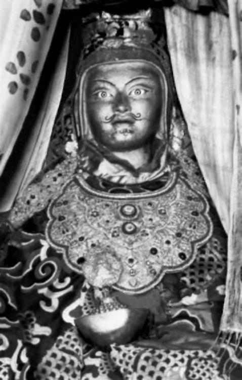

It has never been born
It has never ceased
It has never been liberated
It has never been deluded
It has never existed
It has never been nonexistent
It has no limits at all
It does not fall into any kind of category.
Nyoshul Khenpo Rinpoche said:
Profound and tranquil, free from complexity, Uncompounded luminous clarity,
Beyond the mind of conceptual ideas;
This is the depth of the mind of the Victorious Ones.
In this there is not a thing to be removed, Nor anything that needs to be added.
It is merely the immaculate
Looking naturally at itself.A
THE FOUR FAULTS
Why is it that people should find it so difficult even to conceive of the depth and glory of the nature of mind? Why does it seem to many such an outlandish and improbable idea?
The teachings speak of four faults, which prevent us from realizing the nature of mind right now:
THE NATURE OF MIND 51
1. The nature of mind is just too close to be recognized. Just as we are unable to see our own face, mind finds it difficult to look into its own nature.
2. It is too profound for us to fathom. We have no idea how deep it could be; if we did, we would have already, to a certain extent, realized it.
3. It is too easy for us to believe. In reality, all we need do is simply to rest in the naked, pure awareness of the nature of mind, which is always present.
4. It is too wonderful for us to accommodate. The sheer immensity of it is too vast to fit into our narrow way of thinking. We just can't believe it. Nor can we possibly imagine that enlightenment is the real nature of our minds.
If this analysis of the four faults was true in a civilization like Tibet, devoted almost entirely to the pursuit of enlightenment, how much more strikingly and poignantly true must it be of modern civilization, which is largely devoted to the pursuit of the cult of delusion. There is no general information about the nature of mind. It is hardly ever written about by writers or intellectuals; modern philosophers do not speak of it directly; the majority of scientists deny it could possibly be there at all. It plays no part in popular culture: No one sings about it; no one talks about it in plays; and it's not on TV. We are actually educated into believing that nothing is real beyond what we can perceive with our ordinary senses.
Despite this massive and nearly all-pervasive denial of its existence, we still sometimes have fleeting glimpses of the nature of mind. These could be inspired by a certain exalting piece of music, by the serene happiness we sometimes feel in nature, or by the most ordinary everyday situation. They could arise simply while watching snow slowly drifting down, or seeing the sun rising behind a mountain, or watching a shaft of light falling into a room in a mysteriously moving way. Such moments of illumination, peace, and bliss happen to us all and stay strangely with us.
I think we do, sometimes, half understand these glimpses, but modern culture gives us no context or framework in which to comprehend them. Worse still, rather than encouraging us to explore these glimpses more deeply and discover where they spring from, we are told in both obvious and subde ways to shut them out. We know that no one will take us seriously if we try to share them. So we ignore what could be really the most revealing experiences of our lives, if only 52 THE TIBETAN BOOK OF LIVING AND DYING
we understood them. This is perhaps the darkest and most disturbing aspect of modern civilization—its ignorance and repression of who we really are.
LOOKING IN
Let's say we make a complete shift. Let's say we turn away from looking in only one direction. We have been taught to spend our lives chasing our thoughts and projections. Even when "mind" is talked about, what is referred to is thoughts and emotions alone; and when our researchers study what they imagine to be the mind, they look only at its projections.
No one ever really looks into the mind itself, the ground from which all these expressions arise; and this has tragic consequences. As Padmasambhava said:
Even though that which is usually called "mind" is widely esteemed and much discussed,
Still it is not understood or it is wrongly understood or it is understood in a one-sided manner only.
Since it is not understood correctly, just as it is in itself, There come into existence inconceivable numbers of philosophical ideas and assertions.
Furthermore, since ordinary individuals do not understand it, They do not recognize their own nature,
And so they continue to wander among the six destinies of rebirth within the three worlds, and thus experience suffering.
Therefore, not understanding your own mind is a very grievous fault.5
How can we now turn this situation around? It is very simple.
Our minds have two positions: looking out and looking in.
Let us now look in.
The difference that this slight change in orientation could make is enormous, and might even reverse those disasters that threaten the world. When a much larger number of people know the nature of their minds, they'll know also the glorious nature of the world they are in, and struggle urgently and bravely to preserve it. It's interesting that the word for "Buddhist" in Tibetan is nangpa. It means "inside-er": someone who seeks the truth not outside, but within the nature of mind. All the teachings and training in Buddhism are aimed at that one THE NATURE OF MIND 53
single point: to look into the nature of the mind, and so free us from the fear of death and help us realize the truth of life.
Looking in will require of us great subtlety and great courage—nothing less than a complete shift in our attitude to life and to the mind. We are so addicted to looking outside ourselves that we have lost access to our inner being almost completely. We are terrified to look inward, because our culture has given us no idea of what we will find. We may even think that if we do we will be in danger of madness. This is one of the last and most resourceful ploys of ego to prevent us discovering our real nature.
So we make our lives so hectic that we eliminate the slightest risk of looking into ourselves. Even the idea of meditation can scare people. When they hear the words "egoless" or
"emptiness," they think experiencing those states will be like being thrown out of the door of a spaceship to float forever in a dark, chilling void. Nothing could be further from the truth.
But in a world dedicated to distraction, silence and stillness terrify us; we protect ourselves from them with noise and frantic busyness. Looking into the nature of our mind is the last thing we would dare to do.
Sometimes I think we don't want to ask any real questions about who we are, for fear of discovering there is some other reality than this one. What would this discovery make of how we have lived? How would our friends and colleagues react to what we now know? What would we do with the new knowledge? With knowledge comes responsibility. Sometimes even when the cell door is flung open, the prisoner chooses not to escape.
THE PROMISE OF ENLIGHTENMENT
In the modern world, there are few examples of human beings who embody the qualities that come from realizing the nature of mind. So it is hard for us even to imagine enlightenment or the perception of an enlightened being, and even harder to begin to think we ourselves could become enlightened.
For all its vaunted celebration of the value of human life and individual liberty, our society in fact treats us as obsessed only with power, sex, and money, and needing to be distracted at any moment from any contact with death, or with real life. If we are told of or begin to suspect our deep potential, we cannot believe it; and if we can conceive of spiritual 54 THE TIBETAN BOOK OF LIVING AND DYING
transformation at all, we see it as only possible for the great saints and spiritual masters of the past. The Dalai Lama talks often of the lack of real self-love and self-respect that he sees in many people in the modern world. Underlying our whole outlook is a neurotic conviction of our own limitations. This denies us all hope of awakening, and tragically contradicts the central truth of Buddha's teaching: that we are all already essentially perfect.
Even if we were to think of the possibility of enlightenment, one look at what composes our ordinary mind—anger, greed, jealousy, spite, cruelty, lust, fear, anxiety, and turmoil—
would undermine forever any hope of achieving it, if we had not been told about the nature of mind, and the possibility of coming to realize that nature beyond all doubt.
But enlightenment is real, and there are enlightened masters still on the earth. When you actually meet one, you will be shaken and moved in the depths of your heart and you will realize that all the words, such as "illumination" and "wisdom," which you thought were only ideas, are in fact true.
For all its dangers, the world today is also a very exciting one.
The modern mind is slowly opening to different visions of reality. Great teachers like the Dalai Lama and Mother Teresa can be seen on television; many masters from the East now visit and teach in the West; and books from all the mystical traditions are winning an increasingly large audience. The desperate situation of the planet is slowly waking people up to the necessity for transformation on a global scale.
Enlightenment, as I have said, is real; and each of us, whoever we are, can in the right circumstances and with the right training realize the nature of mind and so know in us what is deathless and eternally pure. This is the promise of all the mystical traditions of the world, and it has been fulfilled and is being fulfilled in countless thousands of human lives.
The wonder of this promise is that it is something not exotic, not fantastic, not for an elite, but for all of humanity; and when we realize it, the masters tell us, it is unexpectedly ordinary. Spiritual truth is not something elaborate and esoteric, it is in fact profound common sense. When you realize the nature of mind, layers of confusion peel away. You don't actually "become" a buddha, you simply cease, slowly, to be deluded. And being a buddha is not being some omnipotent spiritual superman, but becoming at last a true human being.
One of the greatest Buddhist traditions calls the nature of mind "the wisdom of ordinariness." I cannot say it enough: THE NATURE OF MIND 55
Our true nature and the nature of all beings is not something extraordinary. The irony is that it is our so-called ordinary world that is extraordinary, a fantastic, elaborate hallucination of the deluded vision of samsara. It is this "extraordinary"
vision that blinds us to the "ordinary," natural, inherent nature of mind. Imagine if the buddhas were looking down at us now: How they would marvel sadly at the lethal ingenuity and intricacy of our confusion!
Sometimes, because we are so unnecessarily complicated, when the nature of mind is introduced by a master, it is just too simple for us to believe. Our ordinary mind tells us this cannot be, there must be something more to it than this. It must surely be more "glorious," with lights blazing in space around us, angels with flowing golden hair swooping down to meet us, and a deep Wizard of Oz voice announcing, "Now you have been introduced to the nature of your mind." There is no such drama.
Because in our culture we overvalue the intellect, we imagine that to become enlightened demands extraordinary intelligence. In fact many kinds of cleverness are just further obscurations. There is a Tibetan saying that goes, "If you are too clever, you could miss the point entirely." Patrul Rinpoche said: "The logical mind seems interesting, but it is the seed of delusion." People can become obsessed with their own theories and miss the point of everything. In Tibet we say: "Theories are like patches on a coat, one day they just wear off." Let me tell you an encouraging story:
One great master in the last century had a disciple who was very thick-headed. The master had taught him again and again, trying to introduce him to the nature of his mind. Still he did not get it. Finally, the master became furious and told him, "Look, I want you to carry this bag full of barley up to the top of that mountain over there. But you mustn't stop and rest. Just keep on going until you reach the top." The disciple was a simple man, but he had unshakable devotion and trust in his master, and he did exactly what he had been told. The bag was heavy. He picked it up and started up the slope of the mountain, not daring to stop. He just walked and walked.
And the bag got heavier and heavier. It took him a long time.
At last, when he reached the top, he dropped the bag. He slumped to the ground, overcome with exhaustion but deeply relaxed. He felt the fresh mountain air on his face. All his resistance had dissolved and, with it, his ordinary mind. Everything just seemed to stop. At that instant, he suddenly realized 56 THE TIBETAN BOOK OF LIVING AND DYING
the nature of his mind. "Ah! This is what my master has been showing me all along," he thought. He ran back down the mountain, and, against all convention, burst into his master's room.
"I think I've got it now. I've really got it!"
His master smiled at him knowingly: "So you had an interesting climb up the mountain, did you?"
Whoever you are, you too can have the experience the disciple had on that mountain, and it is that experience that will give you the fearlessness to negotiate life and death. But what is the best, quickest, and most efficient way to set about it?
The first step is the practice of meditation. It is meditation that slowly purifies the ordinary mind, unmasking and exhausting its habits and illusions, so that we can, at the right moment, recognize who we really are.
FIVE
Bringing the Mind Home
OVER 2,500 YEARS AGO, a man who had been
searching for the truth for many, many lifetimes came to a quiet place in northern India and sat down under a tree. He continued to sit under the tree, with immense resolve, and vowed not to get up until he had found the truth. At dusk, it is said, he conquered all the dark forces of delusion; and early the next morning, as the star Venus broke in the dawn sky, the man was rewarded for his age-long patience, discipline, and flawless concentration by achieving the final goal of human existence, enlightenment. At that sacred moment, the earth itself shuddered, as if "drunk with bliss," and as the scriptures tell us, "No one anywhere was angry, ill, or sad; no one did evil, none was proud; the world became quite quiet, as though it had reached full perfection." This man became known as the Buddha. Here is the Vietnamese master Thich Nhat Hanh's beautiful description of the Buddha's enlightenment:
Gautama felt as though a prison which had confined him for thousands of lifetimes had broken open. Ignorance had been the jailkeeper. Because of ignorance, his mind had been obscured, just like the moon and stars hidden by the storm clouds. Clouded by endless waves of deluded thoughts, the mind had falsely divided reality into subject and object, self and others, existence and nonexistence, birth and death, and from these discriminations arose wrong views— the prisons of feelings, craving, grasping, and becoming. The suffering of birth, old age, sickness, and death only made the prison walls thicker. The only thing to do was to seize the jailkeeper and see his true face. The jailkeeper was ignorance. Once the jailkeeper was gone, the jail would disappear and never be rebuilt again.1
57
58 THE TIBETAN BOOK OF LIVING AND DYING
What the Buddha saw was that ignorance of our true nature is the root of all the torment of samsara, and the root of ignorance itself is our mind's habitual tendency to distraction. To end the mind's distraction would be to end samsara itself; the key to this, he realized, is to bring the mind home to its true nature, through the practice of meditation.
The Buddha sat in serene and humble dignity on the ground, with the sky above him and around him, as if to show us that in meditation you sit with an open, sky-like attitude of mind, yet remain present, earthed, and grounded. The sky is our absolute nature, which has no barriers and is boundless, and the ground is our reality, our relative, ordinary condition. The posture we take when we meditate signifies that we are linking absolute and relative, sky and ground, heaven and earth, like two wings of a bird, integrating the skylike, deathless nature of mind and the ground of our transient, mortal nature.
The gift of learning to meditate is the greatest gift you can give yourself in this life. For it is only through meditation that you can undertake the journey to discover your true nature, and so find the stability and confidence you will need to live, and die, well. Meditation is the road to enlightenment.
TRAINING THE MIND
There are so many ways to present meditation, and I must have taught on it a thousand times, but each time it is different, and each time it is direct and fresh.
Fortunately we live in a time when all over the world many people are becoming familiar with meditation. It is being increasingly accepted as a practice that cuts through and soars above cultural and religious barriers, and enables those who pursue it to establish a direct contact with the truth of their being. It is a practice that at once transcends the dogma of religions and is the essence of religions.
Generally we waste our lives, distracted from our true selves, in endless activity; meditation, on the other hand, is the way to bring us back to ourselves, where we can really experience and taste our full being, beyond all habitual patterns. Our lives are lived in intense and anxious struggle, in a swirl of speed and aggression, in competing, grasping, possessing, and achieving, forever burdening ourselves with extraneous activities and preoccupations. Meditation is the exact opposite. To meditate is to make a complete break with how we "nor-BRINGING THE MIND HOME 59
mally" operate, for it is a state free of all cares and concerns, in which there is no competition, no desire to possess or grasp at anything, no intense and anxious struggle, and no hunger to achieve: an ambitionless state where there is neither acceptance nor rejection, neither hope nor fear, a state in which we slowly begin to release all those emotions and concepts that have imprisoned us into the space of natural simplicity.
The Buddhist meditation masters know how flexible and workable the mind is. If we tram it, anything is possible. In fact, we are already perfectly trained by and for samsara, trained to get jealous, trained to grasp, trained to be anxious and sad and desperate and greedy, trained to react angrily to whatever provokes us. We are trained, in fact, to such an extent that these negative emotions rise spontaneously, without our even trying to generate them. So everything is a question of training and the power of habit. Devote the mind to confusion and we know only too well, if we're honest, that it will become a dark master of confusion, adept in its addic-tions, subtle and perversely supple in its slaveries. Devote it in meditation to the task of freeing itself from illusion, and we will find that, with time, patience, discipline, and the right training, our mind will begin to unknot itself and know its essential bliss and clarity.
'Training" the mind does not in any way mean forcibly subjugating or brainwashing the mind. To train the mind is first to see directly and concretely how the mind functions, a knowledge that you derive from spiritual teachings and through personal experience in meditation practice. Then you can use that understanding to tame the mind and work with it skillfully, to make it more and more pliable, so that you can become master of your own mind and employ it to its fullest and most beneficial end.
The eighth-century Buddhist master Shantideva said: If this elephant of mind is bound on all sides by the cord of mindfulness,
All fear disappears and complete happiness comes.
All enemies: all the tigers, lions, elephants, bears, serpents [of our emotions]2
And all the keepers of hell, the demons and the horrors, All of these are bound by the mastery of your mind, And by the taming of that one mind, all are subdued, Because from the mind are derived all fears and immeasurable sorrows.6
60 THE TIBETAN BOOK OF LIVING AND DYING
Just as a writer only learns a spontaneous freedom of expression after years of often grueling study, and just as the simple grace of a dancer is achieved only with enormous, patient effort, so when you begin to understand where meditation will lead you, you will approach it as the greatest endeavor of your life, one that demands of you the deepest perseverance, enthusiasm, intelligence, and discipline.
THE HEART OF MEDITATION
The purpose of meditation is to awaken in us the sky-like nature of mind, and to introduce us to that which we really are, our unchanging pure awareness, which underlies the whole of life and death.
In the stillness and silence of meditation, we glimpse and return to that deep inner nature that we have so long ago lost sight of amid the busyness and distraction of our minds. Isn't it extraordinary that our minds cannot stay still for longer than a few moments without grasping after distraction; they are so restless and preoccupied that sometimes I think that, living in a city in the modern world, we are already like the tormented beings in the intermediate state after death, where the consciousness is said to be agonizingly restless. According to some authorities, up to 13 percent of people in the United States suffer from some kind of mental disorder. What does that say about the way we live?
We are fragmented into so many different aspects. We don't know who we really are, or what aspects of ourselves we should identify with or believe in. So many contradictory voices, dictates, and feelings fight for control over our inner lives that we find ourselves scattered everywhere, in all directions, leaving nobody at home.
Meditation, then, is bringing the mind home.
In the teaching of Buddha, we say there are three things that make all the difference between your meditation being merely a way of bringing temporary relaxation, peace, and bliss, or of becoming a powerful cause for your enlightenment and the enlightenment of others. We call them: "Good in the Beginning, Good in the Middle, and Good at the End."
Good in the Beginning springs from the awareness that we BRINGING THE MIND HOME 61
and all sentient beings fundamentally have the buddha nature as our innermost essence, and that to realize it is to be free of ignorance and to put an end, finally, to suffering. So each time we begin our practice of meditation, we are moved by this, and inspire ourselves with the motivation to dedicate our practice, and our life, to the enlightenment of all beings in the spirit of this prayer, which all the buddhas of the past have prayed: By the power and the truth of this practice: May all sentient beings enjoy happiness and the causes of happiness;
May they be free from suffering and the causes of suffering; May they never be separated from the great happiness devoid of suffering,
And may they dwell in the great equanimity that is free from attachment and aversion.
Good in the Middle is the frame of mind with which we enter into the heart of the practice, one inspired by the realization of the nature of mind, from which arises an attitude of nongrasping, free of any conceptual reference whatsoever, and an awareness that all things are inherently "empty," illusory, and dreamlike.
Good at the End is the way in which we bring our meditation to a close by dedicating all its merit, and praying with real fervor: "May whatever merit that comes from this practice go toward the enlightenment of all beings; may it become a drop in the ocean of the activity of all the buddhas in their tireless work for the liberation of all beings." Merit is the positive power and benefit, the peace and happiness that radiate from your practice. You dedicate this merit for the long-term, ultimate benefit of beings, for their enlightenment. On a more immediate level, you dedicate it so that there may be peace in the world, so that everyone may be entirely free of want and illness and experience total well-being and lasting happiness. Then, realizing the illusory and dreamlike nature of reality, you reflect on how, in the deepest sense, you who are dedicating your practice, those to whom you are dedicating it, and even the very act of dedication are all inherently "empty" and illusory. This is said in the teachings to seal the meditation and ensure that none of its pure power can leak or seep away, and so ensure that none of the merit of your practice is ever wasted.
These three sacred principles—the skillful motivation, the attitude of nongrasping that secures the practice, and the dedication 62 THE TIBETAN BOOK OF LIVING AND DYING
that seals it—are what make your meditation truly enlighten-ing and powerful. They have been beautifully described by the great Tibetan master Longchenpa as "the heart, the eye, and the life-force of true practice." As Nyoshul Khenpo says: "To accomplish complete enlightenment, more than this is not necessary: but less than this is incomplete."
THE PRACTICE OF MINDFULNESS
Meditation is bringing the mind back home, and this is first achieved through the practice of mindfulness.
Once an old woman came to Buddha and asked him how to meditate. He told her to remain aware of every movement of her hands as she drew the water from the well, knowing that if she did, she would soon find herself in that state of alert and spacious calm that is meditation.
The practice of mindfulness, of bringing the scattered mind home, and so of bringing the different aspects of our being into focus, is called "Peacefully Remaining" or "Calm Abiding."
This is the first practice on the Buddhist path of meditation, and it is known as shamatha in Sanskrit, shyine in Tibetan.
Calm Abiding accomplishes several things. First, all the fragmented aspects of ourselves, which have been at war, settle and dissolve and become friends. In that settling we begin to understand ourselves more, and sometimes even have glimpses of the radiance of our fundamental nature.
Next, the practice of mindfulness defuses our negativity, aggression, pain, suffering, and frustration, which may have been gathering power over many lifetimes. Rather than sup-pressing emotions or indulging in them, here it is important to view them, and your thoughts, and whatever arises with an acceptance and a generosity that are as open and spacious as possible.
Gradually, as you remain open and mindful, and use one of the techniques that I will explain later to focus your mind more and more, your negativity will slowly be defused; you begin to feel well in your being, or as the French say, etre Men dans sa peau (well in your own skin). From this comes release and a profound ease. I think of this practice as the most effective form of therapy and self-healing.
Then, this practice unveils and reveals your essential Good Heart, because it dissolves and removes the unkindness or the harm in you. Only when we have removed the harm in ourselves do we become truly useful to others. Through the prac-BRINGING THE MIND HOME 63
tice, then, by slowly removing the unkindness and harm from ourselves, we allow our true Good Heart, the fundamental goodness and kindness that are our real nature, to shine out and become the warm climate in which our true being flowers.
You will see now why I call meditation the true practice of peace, the true practice of nonaggression and nonviolence, and the real and greatest disarmament.
NATURAL GREAT PEACE
When I teach meditation, I often begin by saying: "Bring your mind home. And release. And relax."
The whole of meditation practice can be essentialized into these three crucial points: bring your mind home, and release, and relax. Each phrase contains meanings that resonate on many levels.
To bring your mind home means to bring the mind into the state of Calm Abiding through the practice of mindfulness. In its deepest sense, to bring your mind home is to turn your mind inward and to rest in the nature of mind. This itself is the highest meditation.
To release means to release mind from its prison of grasping, since you recognize that all pain and fear and distress arise from the craving of the grasping mind. On a deeper level, the realization and confidence that arise from your growing understanding of the nature of mind inspire the profound and natural generosity that enables you to release all grasping from your heart, letting it free itself, to melt away in the inspiration of meditation.
Finally, to relax means to be spacious and to relax the mind of its tensions. More deeply, you relax into the true nature of your mind, the state of Rigpa. The Tibetan words that evoke this process suggest the sense of "relaxing upon the Rigpa." It is like pouring a handful of sand onto a flat surface; each grain settles of its own accord. This is how you relax into your true nature, letting all thoughts and emotions naturally subside and dissolve into the state of the nature of mind.
When I meditate, I am always inspired by this poem by Nyoshul Khenpo:
Rest in natural great peace
This exhausted mind
Beaten helpless by karma and neurotic thought, Like the relentless fury of the pounding waves In the infinite ocean of samsara.
64 THE TIBETAN BOOK OF LIVING AND DYING
Rest in natural great peace.
Above all, be at ease; be as natural and spacious as possible. Slip quietly out of the noose of your habitual anxious self, release all grasping, and relax into your true nature.
Think of your ordinary, emotional, thought-ridden self as a block of ice or a slab of butter left out in the sun. If you are feeling hard and cold, let this aggression melt away in the sunlight of your meditation. Let peace work on you and enable you to gather your scattered mind into the mindfulness of Calm Abiding, and awaken in you the awareness and insight of Clear Seeing. And you will find all your negativity disarmed, your aggression dissolved, and your confusion evaporating slowly, like mist into the vast and stainless sky of your absolute nature.4
Quietly sitting, body still, speech silent, mind at peace, let thoughts and emotions, whatever arises, come and go, without clinging to anything.
What does this state feel like? Dudjom Rinpoche used to say, imagine a man who comes home after a long, hard day's work in the fields and sinks into his favorite chair in front of the fire. He has been working all day and he knows he has achieved what he wanted to achieve; there is nothing more to worry about, nothing left unaccomplished, and he can let go completely of all his cares and concerns, content, simply, to be.
So when you meditate, it is essential to create the right inner environment of the mind. All effort and struggle come from not being spacious, and so creating that right environment is vital for your meditation truly to happen. When humor and spaciousness are present, meditation arises effortlessly.
Sometimes when I meditate, I don't use any particular method. I just allow my mind to rest, and find, especially when I am inspired, that I can bring my mind home and relax very quickly. I sit quietly and rest in the nature of mind; I don't question or doubt whether I am in the "correct" state or not. There is no effort, only rich understanding, wakefulness, and unshakable certainty. When I am in the nature of mind, the ordinary mind is no longer there. There is no need to sustain or confirm a sense of being: I simply am. A fundamental trust is present. There is nothing in particular to do.
BRINGING THE MIND HOME 65
METHODS IN MEDITATION
If your mind is able to settle naturally of its own accord, and if you find you are inspired simply to rest in its pure awareness, then you do not need any method of meditation.
In fact, it might even be unskillful when you're in such a state to try to employ one. However, the vast majority of us find it difficult to arrive at that state straight away. We simply do not know how to awaken it, and our minds are so wild and so distracted that we need a skillful means, a method to evoke it.
By "skillful" I mean that you bring together your understanding of the essential nature of your mind, your knowledge of your own various, shifting moods, and the insight you have developed through your practice into how to work with yourself, from moment to moment. By bringing these together, you learn the art of applying whatever method is appropriate for any particular situation or problem, to transform that environment of your mind.
But remember: A method is only a means, not the meditation itself. It is through practicing the method skillfully that you reach the perfection of that pure state of total presence which is the real meditation.
There is a revealing Tibetan saying, "Gompa ma yin, kompa yin," which means literally: "'Meditation' is not; 'getting used to' is." It means that meditation is nothing other than getting used to the practice, of meditation. As it is said, "Meditation is not striving, but naturally becoming assimilated into it." As you continue to practice the method, then meditation slowly arises. Meditation is not something that you can "do"; it is something that has to happen spontaneously, only when the practice has been perfected.
However, for meditation to happen, calm and auspicious conditions have to be created. Before we have mastery over our mind, we need first to calm its environment. At the moment, mind is like a candle flame: unstable, flickering, constantly changing, fanned by the violent winds of our thoughts and emotions. The flame will only burn steadily when we can calm the air around it; so we can only begin to glimpse and rest in the nature of mind when we have stilled the turbulence of our thoughts and emotions. On the other hand, once we have found a stability in our meditation, noises and disturbances of every kind will have far less impact.
In the West, people tend to be absorbed by what I would call the "technology of meditation." The modern world, after 66 THE TIBETAN BOOK OF LIVING AND DYING
all, is fascinated by mechanisms and machines, and addicted to purely practical formulas. But by far the most important feature of meditation is not the technique, but the spirit: the skillful, inspired, and creative way in which we practice, which could also be called "the posture."
THE POSTURE
The masters say: "If you create an auspicious condition in your body and your environment, then meditation and realization will automatically arise." Talk about posture is not esoteric pedantry; the whole point of assuming a correct posture is to create a more inspiring environment for meditation, for the awakening of Rigpa. There is a connection between the posture of the body and the attitude of the mind. Mind and body are interrelated, and meditation arises naturally once your posture and attitude are inspired.
If you are sitting, and your mind is not wholly in tune with your body—if you are, for instance, anxious and preoccupied with something—then your body will experience physical dis-comfort and difficulties will arise more easily. Whereas if your mind is in a calm, inspired state, it will influence your whole posture, and you can sit much more naturally and effortlessly.
So it is very important to unite the posture of your body and the confidence that arises from your realization of the nature of mind.
The posture I am going to explain to you may differ slightly from others you may be used to. It comes from the ancient teachings of Dzogchen and is the one my masters taught me, and I have found it extremely powerful.
In the Dzogchen teachings it is said that your View and your posture should be like a mountain. Your View is the summation of your whole understanding and insight into the nature of mind, which you bring to your meditation. So your View translates into and inspires your posture, expressing the core of your being in the way you sit.
Sit, then, as if you were a mountain, with all the unshakable, steadfast majesty of a mountain. A mountain is completely natural and at ease with itself, however strong the winds that batter it, however thick the dark clouds that swirl around its peak.
Sitting like a mountain, let your mind rise and fly and soar.
The most essential point of this posture is to keep the back straight, like "an arrow" or "a pile of golden coins." The "inner energy," or prana, will then flow easily through the subtle BRINGING THE MIND HOME 67
channels of the body, and your mind will find its true state of rest. Don't force anything. The lower part of the spine has a natural curve; it should be relaxed but upright. Your head should be balanced comfortably on your neck. It is your shoulders and the upper part of your torso that carry the strength and grace of the posture, and they should be held in strong poise, but without any tension.
Sit with your legs crossed. You do not have to sit in the full-lotus posture, which is emphasized more in advanced yoga practice. The crossed legs express the unity of life and death, good and bad, skillful means and wisdom, masculine and feminine principles, samsara and nirvana; the humor of nonduality. You may also choose to sit on a chair, with your legs relaxed, but be sure always to keep your back straight.5
In my tradition of meditation, your eyes should be kept open: this is a very important point. If you are sensitive to disturbances from outside, when you begin to practice you may find it helpful to close your eyes for a while and quietly turn within.
Once you feel established in calm, gradually open your eyes, and you will find your gaze has grown more peaceful and tranquil. Now look downwards, along the line of your nose, at an angle of about 45 degrees in front of you. One practical tip in general is that whenever your mind is wild, it is best to lower your gaze, and whenever it is dull and sleepy, to bring the gaze up.
Once your mind is calm and the clarity of insight begins to arise, you will feel free to bring your gaze up, opening your eyes more and looking into the space directly in front of you.
This is the gaze recommended in the Dzogchen practice.
In the Dzogchen teachings it is said that your meditation and your gaze should be like the vast expanse of a great ocean: all-pervading, open, and limitless. Just as your View and posture are inseparable, so your meditation inspires your gaze, and they now merge as one.
Do not focus then on anything in particular; instead, turn back into yourself slightly, and let your gaze expand and become more and more spacious and pervasive. You will discover now that your vision itself becomes more expansive, and that there is more peace, more compassion in your gaze, more equanimity, and more poise.
The Tibetan name of the Buddha of Compassion is Chenrezig. Chen is the eye, re is the corner of the eye, and zig means "see." This signifies that with his compassionate eyes 68 THE TIBETAN BOOK OF LIVING AND DYING
Chenrezig sees the needs of all beings. So direct the compassion that radiates from your meditation, softly and gently, through your eyes, so that your gaze becomes the very gaze of compassion itself, all-pervasive and oceanlike.
There are several reasons for keeping the eyes open. With the eyes open, you are less likely to fall asleep. Then, meditation is not a means of running away from the world, or of escaping from it into a trancelike experience of an altered state of consciousness. On the contrary, it is a direct way to help us truly understand ourselves and relate to life and the world.
Therefore, in meditation, you keep your eyes open, not closed. Instead of shutting out life, you remain open and at peace with everything. You leave all your senses—hearing, seeing, feeling—just open, naturally, as they are, without grasping after their perceptions. As Dudjom Rinpoche said:
'Though different forms are perceived, they are in essence empty; yet in the emptiness one perceives forms. Though different sounds are heard, they are empty; yet in the emptiness one perceives sounds. Also different thoughts arise; they are empty, yet in the emptiness one perceives thoughts." Whatever you see, whatever you hear, leave it as it is, without grasping. Leave the hearing in the hearing, leave the seeing in the seeing, without letting your attachment enter into the perception.
According to the special luminosity practice of Dzogchen, all the light of our wisdom-energy resides in the heart center, which is connected through "wisdom channels" to the eyes.
The eyes are the "doors" of the luminosity, so you keep them open, in order not to block these wisdom channels.6
When you meditate keep your mouth slightly open, as if about to say a deep, relaxing "Aaaah." By keeping the mouth slightly open and breathing mainly through the mouth, it is said that the "karmic winds" that create discursive thoughts are normally less likely to arise and create obstacles in your mind and meditation.
Rest your hands comfortably covering your knees. This is called the "mind in comfort and ease" posture.
There is a spark of hope, a playful humor, about this posture that lies in the secret understanding that we all have the buddha nature. So when you assume this posture, you are playfully imitating a buddha, acknowledging and giving real encouragement to the emergence of your own buddha nature.
BRINGING THE MIND HOME 69
You begin in fact to respect yourself as a potential buddha. At th e sam e time , you still recognize your relative condition. But because you have let yourself be inspired by a joyful trust in your own true buddha nature, you can accept your negative aspects more easily and dea l with the m more kindly and with more humor. Whe n you meditate, then, invit e yourself to feel th e self-esteem , th e dignity, and strong humility of th e buddha that you are. I often say that if you simply let yourself be inspired by thi s joyful trust, it is enough: out of this understanding and confidence meditation will naturally arise.
THREE METHODS OF MEDITATION
The Buddha taught 84,000 different ways to tame and pacif y th e negative emotions, and in Buddhism there are countless methods of meditation. I hav e found three meditation techniques that ar e particularly effective in th e modern world an d that anyone can practice an d benefi t from. They are using an object, reciting a mantra, and "watching " th e breath.
1. Using an Object
The first method is to rest th e min d lightly on an object.
You can use an objec t of natural beauty that invokes a special feeling of inspiration for you, such as a flower or crystal. But something that embodies th e truth, such as an image of th e Buddha, or Christ, or particularly your master, is even more powerful. Your master is your living link with th e truth; an d because of your personal connection to your master, just seeing his or her face connects you to th e inspiration an d truth of your own nature.
Many peopl e hav e found a particular connection with th e picture of th e statue of Padmasambhava called "Looks Like Me," which wa s made from life and blessed by him in th e eight h century in Tibet. Padmasambhava, by th e enormous power of his spiritual personality, brought th e teaching of Buddha to Tibet. He is known as th e "second Buddha" an d affectionately called "Guru Rinpoche," meaning "Precious Master," by th e Tibetan people. Dilgo Khyentse Rinpoche said:
"There have been many incredible and incomparable masters from th e nobl e lan d of India and Tibet, th e Land of Snows, yet of them all, the one who has the greatest compassion and blessing toward beings in thi s difficult age is Padmasambhava, who embodies the compassion and wisdom of all the buddhas.

Padmasambhava: "Looks Like Me" Padmasambhava, the "Precious Master"
"Guru Rinpoche," is the founder of Tibetan Buddhism and the Buddha of our time. It is believed that, on seeing this statue at Samye in Tibet, where it was made in the eighth century, he remarked, "It looks like me," and then blessed it, saying, "Now it is the same as me!"
BRINGING THE MIND HOME 71
One of his qualities is that he has the power to give his blessing instantly to whoever prays to him, and whatever we may pray for, he has the power to grant our wish immediately."
Inspired by this, fix a copy of this picture at your eye level and lightly set your attention on his face, especially on the gaze of his eyes. There is a deep stillness in the immediacy of that gaze, which almost bursts out of the photograph to carry you into a state of awareness without clinging, the state of meditation. Then leave your mind quiedy, at peace, with Padmasambhava.
2. Reciting a Mantra
A second technique, used a great deal in Tibetan Buddhism (and also in Sufism, Orthodox Christianity and Hinduism), is uniting the mind with the sound of a mantra. The definition of mantra is "that which protects the mind." That which protects the mind from negativity, or that which protects you from your own mind, is called mantra.
When you are nervous, disoriented, or emotionally fragile, chanting or reciting a mantra inspiringly can change the state of your mind completely by transforming its energy and atmosphere. How is this possible? Mantra is the essence of sound, and the embodiment of the truth in the form of sound. Each syllable is impregnated with spiritual power, condenses a spiritual truth, and vibrates with the blessing of the speech of the buddhas. It is also said that the mind rides on the subtle energy of the breath, the prana, which moves through and purifies the subtle channels of the body. So when you chant a mantra, you are charging your breath and energy with the energy of the mantra, and so working directly on your mind and subdue body.
The mantra I recommend to my students is OM AH HUM
VAJRA GURU PADMA SIDDHI HUM (Tibetans say: Om Ah Hung Benza Guru Pema Siddhi Hung), which is the mantra of Padmasambhava, the mantra of all the buddhas, masters, and realized beings, and so uniquely powerful for peace, for healing, for transformation, and for protection in this violent, chaotic age.7 Recite the mantra quietly, with deep attention, and let your breath, the mantra, and your awareness become slowly one. Or chant it in an inspiring way, and rest in the profound silence that sometimes follows.
Even after a lifetime of being familiar with the practice, I am still sometimes astonished by the power of mantra. A few years ago, I was conducting a workshop for three hundred 72 THE TIBETAN BOOK OF LIVING AND DYING
people in Lyons, France, mostly housewives and therapists. I had been teaching all day, but they seemed really to want to make the most of their time with me and kept on asking me questions, relentlessly, one after another. By the end of the afternoon I was completely drained, and a dull and heavy atmosphere had descended over the whole room. So I chanted a mantra, this mantra I have taught you here. I was amazed by the effect: In a few moments I felt all my energy was restored, the atmosphere around us was transformed, and the whole audience seemed once again bright and enchanting. I have had experiences like this time and time again, so I know it is not just an occasional "miracle"!
3. "Watching" the Breath
The third method is very ancient and found in all schools of Buddhism. It is to rest your attention, lightly and mindfully, on the breath.
Breath is life, the basic and most fundamental expression of our life. In Judaism ruah, "breath," means the spirit of God that infuses the creation; in Christianity also there is a profound link between the Holy Spirit, without which nothing could have life, and the breath. In the teaching of Buddha, the breath, or prana in Sanskrit, is said to be "the vehicle of the mind," because it is the prana that makes our mind move. So when you calm the mind by working skillfully with the breath, you are simultaneously and automatically taming and training the mind. Haven't we all experienced how relaxing it can be, when life becomes stressful, to be alone for a few minutes and just breathe, in and out, deeply and quietly? Even such a simple exercise can help us a great deal.
So when you meditate, breathe naturally, just as you always do. Focus your awareness lightly on the out-breath.
When you breathe out, just flow out with the out-breath.
Each time you breathe out, you are letting go and releasing all your grasping. Imagine your breath dissolving into the all-pervading expanse of truth. Each time you breathe out and before you breathe in again, you will find that there will be a natural gap, as the grasping dissolves.
Rest in that gap, in that open space. And when, naturally, you breathe in, don't focus especially on the in-breath but go on resting your mind in the gap that has opened up.
When you are practicing, it's important not to get involved in mental commentary, analysis, or internal gossip. Do not mistake the running commentary in your mind ("Now I'm BRINGING THE MIND HOME 73
breathing in, now I'm breathing out") for mindfulness; what is important is pure presence.
Don't concentrate too much on the breath. What is very important, the masters always advise, is not to fixate while practicing the concentration of Calm Abiding. That's why they recommend you place about 25 percent of your attention on mindfulness of the breath. But then, as you will discover, mindfulness alone is not enough. While you are supposed to be watching the breath, after only one or two minutes you can find yourself playing in a football game or starring in your own film. So another 25 percent should be devoted to a continuous and watchful awareness, one that oversees and checks whether you are still mindful of the breath. The remaining 50
percent of your attention is left abiding, spaciously.
As you become more mindful of your breathing, you will find that you become more and more present, gather all your scattered aspects back into yourself, and become whole.
Rather than "watching" the breath, let yourself gradually identify with it, as if you were becoming it. Slowly the breath, the breather, and the breathing become one; duality and separation dissolve.
You will find that this very simple process of mindfulness filters your thoughts and emotions. Then, as if you were shed-ding an old skin, something is peeled off and freed.
The Three Methods in One
Each of these three methods forms a complete meditation practice on its own. However, after many years of teaching, I have found that what can be particularly effective is to combine them into one practice, in the order given here. First, resting our mind on an object can transform our outer environment and acts on the level of form and the body. Second, reciting or chanting a mantra can purify our inner world of sound, emotion, and energy. Third, watching the breath can pacify the innermost dimension of the mind, as well as the prana, "the vehicle of the mind." So the three methods work, in turn, on the three aspects that we are composed of: body, speech, and mind. As you practice them, one leads into the next and enables you to become steadily more peaceful and more present.
Begin by resting your gaze on an object, say the photograph of Padmasambhava. Gaze into his face. A sacred image like this actually transmits peace. The power of its blessing brings such serenity that simply to look at it will calm your mind. What is 74 THE TIBETAN BOOK OF LIVING AND DYING
more, it evokes and reminds you of the Buddha within you.
As well as serving as the object of your meditation, it will transform the environment around you and, even more important, inspire the atmosphere of your meditation with a deep stillness. If you wish, as you gaze into Padmasambhava's face, invoke the blessing and presence of all the buddhas.
Then recite the mantra, and let its sound transform the energy of your mind and purify your emotions. Try chanting it aloud. Chant with as much inspiration and feeling as you can, and it will release your nervous tension. Then, rest in the special silence that ensues. You will find your mind naturally quieter, more focused, more pliable, and at peace. Equally, you can recite the mantra softly or silently, as I have explained.
Sometimes our minds are too agitated and too restless to be able to focus immediately on the breath. But if you practice for a little while with the first two methods, by the time you come to turn your attention to the breath, your mind will already be somewhat tamed. Now you can remain, silently watching your breathing. Continue with this, or after a while return to the practice that most deeply appeals to you.
Spend as much time on each method as you wish before moving on to the next. You may find that sometimes unifying the practice, in the sequence given here, is of more help, and at other times one method, whether it is watching the breath or looking at an object or reciting a mantra, will be more effective in gathering your mind. Some people, for example, are simply not relaxed or at ease with watching the breathing; they find it almost claustrophobic. For them an object or a mantra is more suitable. The important thing is to do whatever helps you the most and whatever is appropriate for your mood. Be adventurous, but try to avoid jumping from one method to another, once you have chosen a method to use.
Be wise in applying the right practice to fit your specific need at the time. That is being skillful.
THE MIND IN MEDITATION
What, then, should we "do" with the mind in meditation?
Nothing at all. Just leave it, simply, as it is. One master described meditation as "mind, suspended in space, nowhere."
There is a famous saying: "If the mind is not contrived, it is spontaneously blissful, just as water, when not agitated, is by nature transparent and clear." I often compare the mind in BRINGING THE MIND HOME 75
meditation to a jar of muddy water: The more we leave the water without interfering or stirring it, the more the particles of dirt will sink to the bottom, letting the natural clarity of the water shine through. The very nature of the mind is such that if you only leave it in its unaltered and natural state, it will find its true nature, which is bliss and clarity.
So take care not to impose anything on the mind or to tax it. When you meditate there should be no effort to control and no attempt to be peaceful. Don't be overly solemn or feel that you are taking part in some special ritual; let go even of the idea that you are meditating. Let your body remain as it is, and your breath as you find it. Think of yourself as the sky, holding the whole universe.
CALM ABIDING A N D CLEAR SEEING
The discipline of the practice of Calm Abiding is to keep bringing your mind back to the object of meditation, for example, the breath. If you're distracted, then suddenly, the instant you remember, you simply bring your mind back to your breathing. Nothing else is necessary. Even to ask, "How on earth did I get so distracted?" is just another distraction.
The simplicity of mindfulness, of continuously bringing your mind back to the breath, gradually calms it down. Gradually mind will settle, in the mind.
As you perfect the practice of Calm Abiding and you become one with the breath, after a while even the breath itself as the focus of your practice dissolves, and you find yourself resting in nowness. This is the one-pointedness that is the fruition and the goal of shamatha, or Calm Abiding. Remaining in nowness and stillness is an excellent accomplishment, but to return to the example of the glass of muddy water—if you keep it still, the dirt will settle and it will become clear, and yet the dirt will still be there, deep down. One day if you stir it, the dirt will rise again. As long as you cultivate stillness, you may enjoy peace, but whenever your mind is a little bit disturbed, deluded thoughts will set in again.
Remaining in the nowness of Calm Abiding cannot lead us to enlightenment or liberation. Nowness becomes a very subtle object, and the mind that dwells in nowness a subtle subject. As long as we remain in the domain of subject-object duality, the mind is still within the ordinary conceptual world of samsara.
Through the practice of Calm Abiding, then, the mind has settled into a state of peace and found stability. Just as the 76 THE TIBETAN BOOK OF LIVING AND DYING
picture in a camera will sharpen as you focus it, so the one-pointedness of Calm Abiding allows an increasing clarity of mind to arise. As obscurations are gradually removed and ego and its grasping tendency begin to dissolve, Clear Seeing, or
"insight," dawns. This is called vipashyana in Sanskrit, and lhaktong in Tibetan. At this point you no longer need the anchor of remaining in nowness, and you can progress, moving on beyond your self even, into that openness which is the
"wisdom that realizes egolessness." This is what will uproot delusion and liberate you from samsara.
As this Clear Seeing progressively deepens, it leads you to an experience of the intrinsic nature of reality, and of the nature of your mind. When the cloud-like thoughts and emotions fade away, the sky-like nature of our true being is revealed, and, shining from it, our buddha nature, like the sun.
And just as both light and warmth blaze from the sun, wisdom and loving compassion radiate out from the mind's innermost nature. Grasping at a false self, or ego, has dissolved, and we simply rest, as much as we can, in the nature of mind, this most natural state that is without any reference or concept, hope, or fear, yet with a quiet but soaring confidence—the deepest form of well-being imaginable.
A DELICATE BALANCE
In meditation, as in all arts, there has to be a delicate balance between relaxation and alertness. Once a monk called Shrona was studying meditation with one of the Buddha's closest disciples. He had difficulty finding the right frame of mind. He tried very hard to concentrate, and gave himself a headache. Then he relaxed his mind, but so much that he fell asleep. Finally he appealed to Buddha for help. Knowing that Shrona had been a famous musician before he became a monk, Buddha asked him: "Weren't you a vina player when you were a layperson?"
Shrona nodded.
"How did you get the best sound out of your vina? Was it when the strings were very tight or when they were very loose?"
"Neither. When they had just the right tension, neither too taut nor too slack."
"Well, it's exactly the same with your mind."
One of the greatest of Tibet's many woman masters, Ma Chik Lap Dron, said: "Alert, alert; yet relax, relax. This is a BRINGING THE MIND HOME 77
crucial point for the View in meditation." Alert your alertness, but at the same time be relaxed, so relaxed in fact that you don't even hold on to an idea of relaxation.
THOUGHTS AND EMOTIONS:
THE WAVES AND THE OCEAN
When people begin to meditate, they often say that their thoughts are running riot and have become wilder than ever before. But I reassure them that this is a good sign. Far from meaning that your thoughts have become wilder, it shows that you have become quieter, and you are finally aware of just how noisy your thoughts have always been. Don't be disheartened or give up. Whatever arises, just keep being present, keep returning to the breath, even in the midst of all the confusion.
In the ancient meditation instructions, it is said that at the beginning thoughts will arrive one on top of another, uninterrupted, like a steep mountain waterfall. Gradually, as you perfect meditation, thoughts become like the water in a deep, narrow gorge, then a great river slowly winding its way down to the sea; finally the mind becomes like a still and placid ocean, ruffled by only the occasional ripple or wave.
Sometimes people think that when they meditate there should be no thoughts and emotions at all; and when thoughts and emotions do arise, they become annoyed and exasperated with themselves and think they have failed. Nothing could be further from the truth. There is a Tibetan saying:
"It's a tall order to ask for meat without bones, and tea without leaves." So long as you have a mind, there will be thoughts and emotions.
Just as the ocean has waves or the sun has rays, so the mind's own radiance is its thoughts and emotions. The ocean has waves, yet the ocean is not particularly disturbed by them.
The waves are the very nature of the ocean. Waves will rise, but where do they go? Back into the ocean. And where do the waves come from? The ocean. In the same manner, thoughts and emotions are the radiance and expression of the very nature of the mind. They rise from the mind, but where do they dissolve? Back into the mind. Whatever arises, do not see it as a particular problem. If you do not impulsively react, if you are only patient, it will once again settle into its essential nature.
When you have this understanding, then rising thoughts only enhance your practice. But when you do not understand 78 THE TIBETAN BOOK OF LIVING AND DYING
what they intrinsically are—the radiance of the nature of your mind—then your thoughts become the seed of confusion. So have a spacious, open, and compassionate attitude toward your thoughts and emotions, because in fact your thoughts are your family, the family of your mind. Before them, as Dudjom Rinpoche used to say: "Be like an old wise man, watching a child play."
We often wonder what to do about negativity or certain troubling emotions. In the spaciousness of meditation, you can view your thoughts and emotions with a totally unbiased attitude. When your attitude changes, then the whole atmosphere of your mind changes, even the very nature of your thoughts and emotions. When you become more agreeable, then they do; if you have no difficulty with them, they will have no difficulty with you either.
So whatever thoughts and emotions arise, allow them to rise and settle, like the waves in the ocean. Whatever you find yourself thinking, let that thought rise and settle, without any constraint. Don't grasp at it, feed it, or indulge it; don't cling to it and don't try to solidify it. Neither follow thoughts nor invite them; be like the ocean looking at its own waves, or the sky gazing down on the clouds that pass through it.
You will soon find that thoughts are like the wind; they come and go. The secret is not to "think" about thoughts, but to allow them to flow through the mind, while keeping your mind free of afterthoughts.
In the ordinary mind, we perceive the stream of thoughts as continuous; but in reality this is not the case. You will discover for yourself that there is a gap between each thought. When the past thought is past and the future thought not yet arisen, you will always find a gap in which the Rigpa, the nature of mind, is revealed. So the work of meditation is to allow thoughts to slow down, to make that gap become more and more apparent.
My master had a student called Apa Pant, a distinguished Indian diplomat and author, who served as Indian ambassador in a number of capital cities around the world. He had even been the representative of the Government of India in Tibet, in Lhasa, and for a time he was their representative in Sikkim.
He was also a practitioner of meditation and yoga, and each time he saw my master, he would always ask him "how to meditate." He was following an Eastern tradition, where the BRINGING THE MIND HOME 79
student keeps asking the master one simple, basic question, over and over again.
Apa Pant told me this story. One day our master, Jamyang Khyentse, was watching a "Lama Dance" in front of the Palace Temple in Gangtok, the capital of Sikkim, and he was chuckling at the antics of the atsara, the clown who provides light relief between dances. Apa Pant kept pestering him, asking him again and again how to meditate, so this time when my master replied, it was in such a way as to let him know that he was telling him once and for all: "Look, it's like this: When the past thought has ceased, and the future thought has not yet risen, isn't there a gap?"
"Yes," said Apa Pant.
"Well, prolong it: That is meditation."
EXPERIENCES
As you continue to practice, you may have all kinds of experiences, both good and bad. Just as a room with many doors and windows allows the air to enter from many directions, in the same way, when your mind becomes open, it is natural that all kinds of experiences can come into it. You might experience states of bliss, clarity, or absence of thoughts.
In one way these are very good experiences and signs of progress in meditation, for when you experience bliss, it's a sign that desire has temporarily dissolved. When you experience real clarity, it's a sign that aggression has temporarily ceased. When you experience a state of absence of thought, it's a sign that your ignorance has temporarily died. By themselves they are good experiences, but if you get attached to them they become obstacles. Experiences are not realization in themselves; but if you remain free of attachment to them, they become what they really are, that is, materials for realization.
Negative experiences are often the most misleading because we usually take them as a bad sign. But in fact the negative experiences in our practice are blessings in disguise. Try not to react to them with aversion as you might normally do, but recognize them instead for what they truly are, merely experiences, illusory and dreamlike. The realization of the true nature of the experience liberates you from the harm or danger of the experience itself, and as a result even a negative experience can become a source of great blessing and accomplishment. There are innumerable stories of how masters 80 THE TIBETAN BOOK OF LIVING AND DYING
worked like this with negative experiences and transformed them into catalysts for realization.
Traditionally it's said that for a real practitioner, it's not the negative experiences but the good ones that bring obstacles.
When things are going well, you have got to be especially careful and mindful so that you don't become complacent or overconfident. Remember what Dudjom Rinpoche said to me when I was in the middle of a very powerful experience:
"Don't get too excited. In the end, it's neither good nor bad."
He knew I was becoming attached to the experience: that attachment, like any other, has to be cut through. What we have to learn, in both meditation and in life, is to be free of attachment to the good experiences and free of aversion to the negative ones.
Dudjom Rinpoche warns us of another pitfall: "On the other hand, in meditation practice, you might experience a muddy, semiconscious, drifting state, like having a hood over your head: a dreamy dullness. This is really nothing more than a kind of blurred and mindless stagnation. How do you get out of this state? Alert yourself, straighten your back, breathe the stale air out of your lungs, and direct your awareness into clear space to freshen your mind. If you remain in this stagnant state, you will not evolve; so whenever this setback arises, clear it again and again. It is important to be as watchful as possible, and to stay as vigilant as you can."
Whatever method you use, drop it or simply let it dissolve on its own, when you find you have arrived naturally at a state of alert, expansive, and vibrant peace. Then continue to remain there quietly, undistracted, without necessarily using any particular method. The method has already achieved its purpose. However, if you do stray or become distracted, then return to whatever technique is most appropriate to call you back.
The real glory of meditation lies not in any method but in its continual living experience of presence, in its bliss, clarity, peace, and, most important of all, complete absence of grasping. The diminishing of grasping in yourself is a sign that you are becoming freer of yourself. And the more you experience this freedom, the clearer the sign that the ego and the hopes and fears that keep it alive are dissolving, and the closer you BRINGING THE MIND HOME 81
will come to the infinitely generous "wisdom that realizes egolessness." When you live in that wisdom home, you'll no longer find a barrier between T and "you," "this" and "that,"
"inside" and "outside"; you'll have come, finally, to your true home, the state of nonduality.8
TAKING BREAKS
Often people ask: "How long should I meditate? And when? Should I practice twenty minutes in the morning and in the evening, or is it better to do several short practices during the day?" Yes, it is good to meditate for twenty minutes, though that is not to say that twenty minutes is the limit. I have not found that it says twenty minutes anywhere in the scriptures; I think it is a notion that has been contrived in the West, and I call it "Meditation Western Standard Time." The point is not how long you meditate; the point is whether the practice actually brings you to a certain state of mindfulness and presence, where you are a little open and able to connect with your heart essence. And five minutes of wakeful sitting practice is of far greater value than twenty minutes of dozing!
Dudjom Rinpoche used to say that a beginner should practice in short sessions. Practice for four or five minutes, and then take a short break of just one minute. During the break let go of the method, but do not let go of your mindfulness altogether. Sometimes when you have been struggling to practice, curiously, the very moment when you take a break from the method—if you are still mindful and present—is the moment when meditation actually happens. That is why the break is just as important a part of meditation as the sitting itself. Sometimes I tell students who are having problems with their practice to practice during the break and take a break during their meditation!
Sit for a short time; then take a break, a very short break of about thirty seconds or a minute. But be mindful of whatever you do, and do not lose your presence and its natural ease.
Then alert yourself and sit again. If you do many short sessions like this, your breaks will often make your meditation more real and more inspiring; they will take the clumsy, irk-some rigidity and solemnity and unnaturalness out of your practice and bring you more and more focus and ease. Gradually, through this interplay of breaks and sitting, the barrier between meditation and everyday life will crumble, the contrast between them will dissolve, and you will find yourself 82 THE TIBETAN BOOK OF LIVING AND DYING
increasingly in your natural pure presence, without distraction.
Then, as Dudjom Rinpoche used to say, "Even though the meditator may leave the meditation, the meditation will not leave the meditator."
INTEGRATION: MEDITATION IN ACTION
I have found that modern spiritual practitioners lack the knowledge of how to integrate their meditation practice with everyday life. I cannot say it strongly enough: to integrate meditation in action is the whole ground and point and purpose of meditation. The violence and stress, the challenges and distractions of modern life make this integration even more urgently necessary.
People complain to me, "I have meditated for twelve years, but somehow I haven't changed. I am still the same. Why?"
Because there is an abyss between their spiritual practice and their everyday life. They seem to exist in two separate worlds, which do not inspire each other at all. I am reminded of a teacher I knew when I was at school in Tibet. He was brilliant at expounding the rules of Tibetan grammar, but he could hardly write one correct sentence!
How, then, do we achieve this integration, this permeation of everyday life with the calm humor and spacious detachment of meditation? There is no substitute for regular practice, for only through real practice will we begin to taste unbrokenly the calm of our nature of mind and so be able to sustain the experience of it in our everyday life.
I always tell my students not to come out of meditation too quickly: allow a period of some minutes for the peace of the practice of meditation to infiltrate your life. As my master Dudjom Rinpoche said: "Don't jump up and rush off, but mingle your mindfulness with everyday life. Be like a man who's fractured his skull, always careful in case someone will touch him."
Then, after meditation, it's important not to give in to the tendency we have to solidify the way we perceive things.
When you do re-enter everyday life, let the wisdom, insight, compassion, humor, fluidity, spaciousness, and detachment that meditation brought you pervade your day-to-day experience.
Meditation awakens in you the realization of how the nature of everything is illusory and dream-like; maintain that awareness even in the thick of samsara. One great master has said: "After meditation practice, one should become a child of illusion."
BRINGING THE MIND HOME 83
Dudjom Rinpoche advised: "In a sense everything is dreamlike and illusory, but even so, humorously you go on doing things. For example, if you are walking, without unnecessary solemnity or self-consciousness, lightheartedly walk toward the open space of truth. When you sit, be the stronghold of truth. As you eat, feed your negativities and illusions into the belly of emptiness, dissolving them into all-pervading space.
And when you go to the toilet, consider all your obscurations and blockages are being cleansed and washed away."
So what really matters is not just the practice of sitting, but far more the state of mind you find yourself in after meditation. It is this calm and centered state of mind you should prolong through everything you do. I like the Zen story in which the disciple asked his master:
"Master, how do you put enlightenment into action? How do you practice it in everyday life?"
"By eating and by sleeping," replied the master.
"But Master, everybody sleeps and everybody eats."
"But not everybody eats when they eat, and not everybody sleeps when they sleep."
From this comes the famous Zen saying, "When I eat, I eat; when I sleep, I sleep."
To eat when you eat and sleep when you sleep means to be completely present in all your actions, with none of the distractions of ego to stop your being there. This is integration. And if you really wish to achieve this, what you need to do is not just practice as if it were an occasional medicine or therapy, but as if it were your daily sustenance or food. That is why one excellent way to develop this power of integration is to practice it in a retreat environment, far from the stresses of modern city life.
All too often people come to meditation in the hope of extraordinary results, like visions, lights, or some supernatural miracle. When no such thing occurs, they feel extremely disappointed. But the real miracle of meditation is more ordinary and much more useful. It is a subtle transformation, and this transformation happens not only in your mind and your emotions, but also actually in your body. It is very healing. Scientists and doctors have discovered that when you are in a good humor, then even the cells in your body are more joyful; and when your mind is in a more negative state, then your cells can become malignant. The whole state of your health has a lot to do with your state of mind and your way of being.
84 THE TIBETAN BOOK OF LIVING AND DYING
I N S P I R A T I O N
I have said that meditation is the road to enlightenment and the greatest endeavor of this life. Whenever I talk about meditation to my students, I always stress the necessity of practicing it with resolute discipline and one-pointed devotion; at the same time, I always tell them how important it is to do it in as inspired and as richly creative a way as possible. In one sense meditation is an art, and you should bring to it an artist's delight and fertility of invention.
Become as resourceful in inspiring yourself to enter your own peace as you are at being neurotic and competitive in the world. There are so many ways of making the approach to meditation as joyful as possible. You can find the music that most exalts you and use it to open your heart and mind. You can collect pieces of poetry, or quotations or lines of teachings that over the years have moved you, and keep them always at hand to elevate your spirit. I have always loved Tibetan thangka paintings and derive strength from their beauty. You too can find reproductions of paintings that arouse a sense of sacredness and hang them on the walls of your room. Listen to a cassette tape of a teaching by a great master or a sacred chant. You can make of the place where you meditate a simple paradise, with one flower, one stick of incense, one candle, one photograph of an enlightened master, or one statue of a deity or a buddha. You can transform the most ordinary of rooms into an intimate sacred space, into an environment where every day you come to the meeting with your true self with all the joy and happy ceremony of one old friend greet-ing another.
And if you find that meditation does not come easily in your city room, be inventive and go out into nature. Nature is always an unfailing fountain of inspiration. To calm your mind, go for a walk at dawn in the park or watch the dew on a rose in a garden. Lie on the ground and gaze up into the sky, and let your mind expand into its spaciousness. Let the sky outside awake a sky inside your mind. Stand by a stream and mingle your mind with its rushing; become one with its ceaseless sound. Sit by a waterfall and let its healing laughter purify your spirit. Walk on a beach and take the sea wind full and sweet against your face. Celebrate and use the beauty of moonlight to poise your mind. Sit by a lake or in a garden and, breathing quietly, let your mind fall silent as the moon comes up majestically and slowly in the cloudless night.
BRINGING THE MIND HOME 85
Everything can be used as an invitation to meditation. A smile, a face in the subway, the sight of a small flower growing in the crack of a cement pavement, a fall of rich cloth in a shop window, the way the sun lights up flower pots on a window sill. Be alert for any sign of beauty or grace. Offer up every joy, be awake at all moments to "the news that is always arriving out of silence."9
Slowly you will become a master of your own bliss, a chemist of your own joy, with all sorts of remedies always at hand to elevate, cheer, illuminate, and inspire your every breath and movement. What is a great spiritual practitioner? A person who lives always in the presence of his or her own true self, someone who has found and who uses continually the springs and sources of profound inspiration. As the modern English writer Lewis Thompson wrote: "Christ, supreme poet, lived truth so passionately that every gesture of his, at once pure Act and perfect Symbol, embodies the transcendent."10
To embody the transcendent is why we are here.
SIX
Evolution, Karma, and Rebirth
ON THAT MOMENTOUS NIGHT when the Buddha
attained enlightenment, it is said that he went through several different stages of awakening. In the first, with his mind "collected and purified, without blemish, free of defilements, grown soft, workable, fixed and immovable," he turned his attention to the recollection of his previous lives. This is what he tells us of that experience:
I remembered many, many former existences I had passed through: one, two births, three, four, five ... fifty, one hundred... a hundred thousand, in various world-periods. I knew everything about these various births: where they had taken place, what my name had been, which family I had been born into, and what I had done. I lived through again the good and bad fortune of each life and my death in each life, and came to life again and again. In this way I recalled innumerable previous existences with their exact characteristic features and circumstances. This knowledge I gained in the first watch of the night.
Since the dawn of history, reincarnation and a firm faith in life after death have occupied an essential place in nearly all the world's religions. Belief in rebirth existed amidst Christians in the early history of Christianity, and persisted in various forms well into the Middle Ages. Origen, one of the most influential of the church fathers, believed in the "pre-existence of souls"
and wrote in the third century: "Each soul comes to this world reinforced by the victories or enfeebled by the defeats of its previous lives." Although Christianity eventually rejected the belief in reincarnation, traces of it can be found throughout Renais-sance thought, in the writings of major romantic poets like Blake and Shelley, and even in so unlikely a figure as the novel-ist Balzac. Since the advent of interest in Eastern religions that 86
EVOLUTION, KARMA, AND REBIRTH 87
began at the end of the nineteenth century, a remarkable number of Westerners have come to accept the Hindu and Buddhist knowledge of rebirth. One of them, the great American industri-alist and philanthropist Henry Ford, wrote:
I adopted the theory of reincarnation when I was twenty-six. Religion offered nothing to the point. Even work could not give me complete satisfaction. Work is futile if we cannot utilize the experience we collect in one life in the next When I discovered reincarnation ... time was no longer limited. I was no longer a slave to the hands of the clock. I would like to communicate to others the calmness that the long view of life gives to us.2
A Gallup poll taken in 1982 showed that nearly one in four Americans believe in reincarnation.3 This is an astonishing statistic considering how dominant the materialist and scientific philosophy is in almost every aspect of life.
However, most people still have only the most shadowy idea about life after death, and no idea of what it might be like. Again and again, people tell me they cannot bring themselves to believe in something for which there is no evidence.
But that is hardly proof, is it, that it does not exist? As Voltaire said: "After all, it is no more surprising to be born twice than it is to be born once."
"If we have lived before," I'm often asked, "why don't we remember it?" But why should the fact that we cannot remember our past lives mean that we have never lived before? After all, experiences of our childhood, or of yesterday, or even of what we were thinking an hour ago were vivid as they occurred, but the memory of them has almost totally eroded, as though they had never taken place. If we cannot remember what we were doing or thinking last Monday, how on earth do we imagine it would be easy, or normal, to remember what we were doing in a previous lifetime?
Sometimes I tease people and ask: "What makes you so adamant that there's no life after death? What proof do you have? What if you found there was a life after this one, having died denying its existence? What would you do then?
Aren't you limiting yourself with your conviction that it doesn't exist? Doesn't it make more sense to give the possibility of a life after death the benefit of the doubt, or at least be open to it, even if there is not what you would call 'concrete evidence'? What would constitute concrete evidence for life after death?"
88 THE TIBETAN BOOK OF LIVING AND DYING
I then like to ask people to ask themselves: Why do you imagine all the major religions believe in a life after this one, and why have hundreds of millions of people throughout history, including the greatest philosophers, sages, and creative geniuses of Asia, lived this belief as an essential part of their lives? Were they all simply deluded?
Let us get back to this point about concrete evidence. Just because we have never heard of Tibet, or just because we have never been there, does not mean that Tibet does not exist. Before the huge continent of America was "discovered,"
who in Europe had any idea that it was there? Even after it had been discovered, people disputed the fact that it had. It is, I believe, our drastically limited vision of life that prevents us from accepting or even beginning seriously to think about the possibility of rebirth.
Fortunately this is not the end of the story. Those of us who undertake a spiritual discipline—of meditation, for example—come to discover many things about our own mind that we did not know before. As our mind opens more and more to the extraordinary, vast, and hitherto unsuspected existence of the nature of mind, we begin to glimpse a completely different dimension, one in which all of our assumptions about our identity and the reality we thought we knew so well start to dissolve, and in which the possibility of lives other than this one becomes at least likely. We begin to understand that everything we are being told by the masters about life and death, and life after death, is real.
SOME SUGGESTIVE "PROOFS" OF REBIRTH
There is by now a vast modern literature dealing with the testimonies of those who claim to be able to remember past lives. I suggest that if you really want to come to some serious understanding of rebirth, you investigate this open-mindedly, but with as much discrimination as possible.
Of the hundreds of stories about reincarnation that could be told here, there is one that particularly fascinates me. It is the story of an elderly man from Norfolk in England called Arthur Flowerdew, who from the age of twelve experienced inexplicable but vivid mental pictures of what seemed like some great city surrounded by desert. One of the images that came most frequently to his mind was of a temple apparently carved out of a cliff. These strange images kept coming back to him, especially when he played with the pink and orange EVOLUTION, KARMA, AND REBIRTH 89
pebbles on the seashore near his home. As he grew older, the details of the city in his vision grew clearer, and he saw more buildings, the layout of the streets, soldiers, and the approach to the city itself through a narrow canyon.
Arthur Flowerdew much later in his life, quite by chance, saw a television documentary film on the ancient city of Petra in Jordan. He was astounded to see, for the very first time, the place he had carried around for so many years in those pictures in his mind. He claimed afterward that he had never even seen a book about Petra. However, his visions became well known, and an appearance in a BBC television program brought him to the attention of the Jordanian government, who proposed to fly him to Jordan along with a BBC producer to film his reactions to Petra. His only previous trip abroad had been a brief visit to the French coast.
Before the expedition left, Arthur Flowerdew was introduced to a world authority on Petra and author of a book on the ancient city, who questioned him in detail, but was baffled by the precision of his knowledge, some of which he said could only have been known by an archaeologist specializing in this area. The BBC recorded Arthur Flowerdew's pre-visit description of Petra, so as to compare it with what would be seen in Jordan. Flowerdew singled out three places in his vision of Petra: a curious volcano-shaped rock on the outskirts of the city, a small temple where he believed he had been killed in the first century B.C., and an unusual structure in the city that was well known to archaeologists, but for which they could find no function. The Petra expert could recall no such rock and doubted that it was there. When he showed Arthur Flowerdew a photograph of the part of the city where the temple had stood, he astounded him by pointing to almost the exact site. Then the elderly man calmly explained the purpose of the structure, one that had not been considered before, as the guard room in which he had served as a soldier two thousand years before.
A significant number of his predictions proved accurate. On the expedition's approach to Petra, Arthur Flowerdew pointed out the mysterious rock; and once in the city he went straight to the guard room, without a glance at the map, and demonstrated how its peculiar check-in system for guards was used.
Finally he went to the spot where he said he had been killed by an enemy spear in the first century B.C. He also indicated the location and purpose of other unexcavated structures on the site.
90 THE TIBETAN BOOK OF LIVING AND DYING
The expert and archaeologist of Petra who accompanied Arthur Flowerdew could not explain this very ordinary Englishman's uncanny knowledge of the city. He said: He's filled in details and a lot of it is very consistent with known archaeological and historical facts and it would require a mind very different from his to be able to sustain a fabric of deception on the scale of his memories— at least those which he's reported to me. I don't think he's a fraud. I don't think he has the capacity to be a fraud on this scale.4
What else could explain Arthur Flowerdew's extraordinary knowledge except rebirth? You could say that he might have read books about Petra, or that he might have even received his knowledge by telepathy yet the fact remains that some of the information he was able to give was unknown even to the experts.
Then there are fascinating cases of children who can spontaneously remember details of a previous life. Many of these cases have been collected by Dr. Ian Stevenson of the University of Virginia.5 One startling account of a child's memories of a past life came to the attention of the Dalai Lama, who sent a special representative to interview her and verify her account.6
Her name was Kamaljit Kour, and she was the daughter of a schoolteacher in a Sikh family in the Punjab in India. One day, on a visit to a fair in a local village with her father, she suddenly asked him to take her to another village, some distance away.
Her father was surprised and asked her why. "I have nothing here," she told him. "This is not my home. Please take me to that village. One of my school-friends and I were riding on our bicycles when suddenly we were hit by a bus. My friend was killed instantly. I was injured in the head, ear, and nose. I was taken from the site of the accident and laid on the bench in front of a small courthouse nearby. Then I was taken to the village hospital. My wounds were bleeding profusely and my parents and relatives joined me there. Since there were no facilities to cure me in the local hospital, they decided to take me to Ambala. As the doctors said I could not be cured, I asked my relatives to take me home." Her father was shocked, but when she insisted, he finally agreed to take her to the village, though he thought that it was just a child's whim.
EVOLUTION, KARMA, AND REBIRTH 91
They went to the village together as promised, and she recognized it as they approached, pointing out the place where the bus had hit her, and asking to be put in a rickshaw, whereupon she gave directions to the driver. She stopped the rickshaw when they arrived at a cluster of houses where she claimed she had lived. The little girl and her bewildered father made their way to the house she said belonged to her former family, and her father, who still did not believe her, asked the neighbors whether there was a family like the one Kamaljit Kour had described, who had lost their daughter. They confirmed the story and told the girl's astonished father that Rishma, the daughter of the family, had been sixteen years old when she was killed; she had died in the car on the way home from the hospital.
The father felt extremely unnerved at this, and told Kamaljit that they should go home. But she went right up to the house, asked for her school photo, and gazed at it with delight. When Rishma's grandfather and her uncles arrived, she recognized them and named them without mistake. She pointed out her own room, and showed her father each of the other rooms in the house. Then she asked for her school books, her two silver bangles and her two ribbons, and her new maroon suit. Her aunt explained that these were all things Rishma had owned. Then she led the way to her uncle's house, where she identified some more items. The next day she met all of her former relatives, and when it was time to catch the bus home, she refused to go, announcing to her father that she was going to stay. Eventually he persuaded her to leave with him.
The family started to piece the story together. Kamaljit Kour was born ten months after Rishma died. Although the little girl had not yet started school, she often pretended to read, and she could remember the names of all her school friends in Rishma's school photograph. Kamaljit Kour had also always asked for maroon-colored clothes. Her parents discovered that Rishma had been given a new maroon suit of which she was very proud, but she had never had time to wear it.
The last thing Kamaljit Kour remembers of her former life was the lights of the car going out on the way home from the hospital; that must have been when she died.
I can think of ways that one might try to discredit this account. You might say that perhaps this little girl's family had put her up to claiming she was the reincarnation of Rishma for some reason of their own. Rishma's family were wealthy 92 THE TIBETAN BOOK OF LIVING AND DYING
farmers, but Kamaljit Kour's own family were not poor and had one of the better houses in their village, with a courtyard and garden. What is intriguing about this story is that in fact her family in this life felt rather uneasy about the whole business, and worried about "what the neighbors might think."
However, what I find most telling is that Rishma's own family admitted that, although they did not know much about their religion, or even whether reincarnation is accepted or not by Sikhs, they were convinced beyond any doubt that Kamaljit Kour was in fact their Rishma.
To anyone who wants to study seriously the possibility of life after death, I suggest looking at the very moving testimonies of the near-death experience. A startling number of those who have survived this experience have been left with a conviction that life continues after death. Many of these had no previous religious belief at all, or any spiritual experience: Now, my entire life through, I am thoroughly convinced that there is life after death, without a shadow of a doubt, and I am not afraid to die. I am not. Some people I have known are so afraid, so scared. I always smile to myself when I hear people doubt there is an afterlife, or say, "When you're dead, you're gone." I think to myself, "They really don't know."7
What happened to me at that time is the most unusual experience I have ever had. It has made me realize that there is life after death.8
I know there is life after death! Nobody can shake my belief. I have no doubt— its peaceful and nothing to be feared. I don't know what's beyond what I experienced, but it's plenty for me...
It gave me an answer to what I think everyone really must wonder about at one time or another in this life. Yes, there is an afterlife! More beautiful than anything we can begin to imagine!
Once you know it, there is nothing that can equal it. You just know!9
The studies on this subject also show that the near-death experiencers tend afterward to be more open and inclined toward accepting reincarnation.
Then again, could not the amazing talents for music or mathematics that certain child prodigies display be attributed EVOLUTION, KARMA, AND REBIRTH 93
to their development in other lives? Think of Mozart, compos-ing minuets at the age of five, and publishing sonatas at eight.10
If life after death does exist, you may ask, why is it so difficult to remember? In the "Myth of Er," Plato suggests an
"explanation" for this lack of memory. Er was a soldier who was taken for dead in battle, and seems to have had a near-death experience. He saw many things while "dead," and was instructed to return to life in order to tell others what the after-death state is like. Just before he returned, he saw those who were being prepared to be born moving in terrible, sti-fling heat through the "Plain of Oblivion," a desert bare of all trees and plants. "When evening came," Plato tells us, "they encamped beside the River Unmindfulness, whose water no vessel can hold. All are requested to drink a certain measure of this water, and some have not the wisdom to save them from drinking more. Every man, as he drinks, forgets everything."11
Er himself was not permitted to drink the water and awoke to find himself on the funeral pyre, able to remember all that he had heard and seen.
Is there some universal law that makes it almost impossible for us to remember where and what we have lived before? Or is it just the sheer volume, range, and intensity of our experiences that have erased any memory of past lives? How much would it help us, I sometimes wonder, if we did remember them? Couldn't that just confuse us even more?
THE CONTINUITY OF MIND
From the Buddhist point of view, the main argument that
"establishes" rebirth is one based on a profound understanding of the continuity of mind. Where does consciousness come from? It cannot arise out of nowhere. A moment of consciousness cannot be produced without the moment of consciousness that immediately preceded it. His Holiness the Dalai Lama explains this complex process in this way: The basis on which Buddhists accept the concept of rebirth is principally the continuity of consciousness. Take the material world as an example: all the elements in our present universe, even down to a microscopic level, can be traced back, we believe, to an origin, an initial point where all the elements of the material world are condensed into what are technically known as "space particles." These particles, in turn, are the state which is the result of the disintegration of 94 THE TIBETAN BOOK OF LIVING AND DYING
a previous universe. So there is a constant cycle, in which the universe evolves and disintegrates, and then comes back again into being.
Now mind is very similar. The fact that we possess something called "mind" or "consciousness" is quite obvious, since our experience testifies to its presence. Then it is also evident, agfdn from our own experience, that what we call "mind" or "consciousness" is something which is subject to change when it is exposed to different conditions and circumstances. This shows us its moment-to-moment nature, its susceptibility to change.
Another fact that is obvious is that gross levels of "mind" or
"consciousness" are intimately linked with physiological states of the body, and are in fact dependent on them. But there must be some basis, energy, or source which allows mind, when interacting with material particles, to be capable of producing conscious living beings.
just like the material plane, this too must have its continuum in the past So if you trace our present mind or consciousness back, then you will find that you are tracing the origin of the continuity of mind, just like the origin of the material universe, into an infinite dimension; it is, as you will see, beginningless.
Therefore there must be successive rebirths that allow that continuum of mind to be there.
Buddhism believes in universal causation, that everything is subject to change, and to causes and conditions. So there is no place given to a divine creator, nor to beings who are self-created; rather everything arises as a consequence of causes and conditions.
So mind, or consciousness, too comes into being as a result of its previous instants.
When we talk of causes and conditions, there are two principal types: substantial causes, the stuff from which something is produced, and cooperative factors, which contribute towards that causation. In the case of mind and body, although one can affect the other, one cannot become the substance of the other. Mind and matter, although dependent on one another, cannot serve as substantial causes for each other.
This is the basis on which Buddhism accepts rebirth.12
Most people take the word "reincarnation" to imply there is some "thing" that reincarnates, which travels from life to life.
But in Buddhism we do not believe in an independent and unchanging entity like a soul or ego that survives the death of the body. What provides the continuity between lives is not an entity, we believe, but the ultimately subtlest level of consciousness. The Dalai Lama explains:
EVOLUTION, KARMA, AND REBIRTH 95
According to the Buddhist explanation, the ultimate creative principle is consciousness. There are different levels of consciousness.
What we call innermost subtle consciousness is always there. The continuity of that consciousness is almost like something permanent, like the space-particles. In the field of matter, that is the space-particles; in the field of consciousness, it is the Clear Light. The Clear Light, with its special energy, makes the connection with consciousness.13
The exact way in which rebirth takes place has been well illustrated with the following example:
The successive existences in a series of rebirths are not like the pearls in a pearl necklace, held together by a string, the "soul,"
which passes through all the pearls; rather they are like dice piled one on top of the other. Each die is separate, but it supports the one above it, with which it is functionally connected. Between the dice there is no identity, but conditionality14
There is in the Buddhist scriptures a very clear account of this process of conditionality. The Buddhist sage Nagasena explained it to King Milinda in a set of famous answers to questions that the King posed him.
The King asked Nagasena: "When someone is reborn, is he the same as the one who just died, or is he different?"
Nagasena replied: "He is neither the same, nor different...
Tell me, if a man were to light a lamp, could it provide light the whole night long?"
"Yes."
"Is the flame then which burns in the first watch of the night the same as the one that burns in the second or the last?"
"No."
"Does that mean there is one lamp in the first watch of the night, another in the second, and another in the third?"
"No, it's because of that one lamp that the light shines all night."
"Rebirth is much the same: one phenomenon arises and another stops, simultaneously. So the first act of consciousness in the new existence is neither the same as the last act of consciousness in the previous existence, nor is it different."
The King asks for another example to explain the precise nature of this dependence, and Nagasena compares it to milk: the curds, butter, or ghee that can be made from milk are 96 THE TIBETAN BOOK OF LIVING AND DYING
never the same as the milk, but they depend on it entirely for their production.
The King then asks: "If there is no being that passes on from body to body, wouldn't we then be free of all the negative actions we had done in past lives?"
Nagasena gives this example: A man steals someone's mangoes. The mangoes he steals are not exactly the same mangoes that the other person had originally owned and planted, so how can he possibly deserve to be punished? The reason he does, Nagasena explains, is that the stolen mangoes only grew because of those that their owner had planted in the first place. In the same way, it is because of our actions in one life, pure or impure, that we are linked with another life, and we are not free from their results.
K A R M A
In the second watch of the night when Buddha attained enlightenment, he gained another kind of knowledge, which complemented his knowledge of rebirth: that of karma, the natural law of cause and effect.
"With the heavenly eye, purified and beyond the range of human vision, I saw how beings vanish and come to be again.
I saw high and low, brilliant and insignificant, and how each obtained according to his karma a favorable or painful rebirth."15
The truth and the driving force behind rebirth is what is called karma. Karma is often totally misunderstood in the West as fate or predestination; it is best thought of as the infallible law of cause and effect that governs the universe.
The word karma literally means "action," and karma is both the power latent within actions, and the results our actions bring.
There are many kinds of karma: international karma, national karma, the karma of a city, and individual karma. All are intricately interrelated, and only understood in their full complexity by an enlightened being.
In simple terms, what does karma mean? It means that whatever we do, with our body, speech, or mind, will have a corresponding result. Each action, even the smallest, is pregnant with its consequences. It is said by the masters that even a little poison can cause death and even a tiny seed can become a huge tree. And as Buddha said: "Do not overlook negative actions merely because they are small; however small EVOLUTION, KARMA, AND REBIRTH 97
a spark may be, it can bum down a haystack as big as a mountain." Similarly he said: "Do not overlook tiny good actions, thinking they are of no benefit; even tiny drops of water in the end will fill a huge vessel." Karma does not decay like external things, or ever become inoperative. It cannot be destroyed "by time, fire, or water." Its power will never disappear, until it is ripened.
Although the results of our actions may not have matured yet, they will inevitably ripen, given the right conditions. Usually we forget what we do, and it is only long afterward that the results catch up with us. By then we are unable to connect them with their causes. Imagine an eagle, says Jikme Lingpa. It is flying, high in the sky. It casts no shadow. Nothing shows that it is there. Then suddenly it spies its prey, dives, and swoops to the ground. And as it drops, its menacing shadow appears.
The results of our actions are often delayed, even into future lifetimes; we cannot pin down one cause, because any event can be an extremely complicated mixture of many karmas ripening together. So we tend to assume now that things happen to us "by chance," and when everything goes well, we simply call it "good luck."
And yet what else but karma could really begin to explain satisfyingly the extreme and extraordinary differences between each of us? Even though we may be born in the same family or country, or in similar circumstances, we all have different characters, totally different things happen to us, we have different talents, inclinations, and destinies.
As Buddha said, "What you are is what you have been, what you will be is what you do now." Padmasambhava went further: "If you want to know your past life, look into your present condition; if you want to know your future life, look at your present actions."
THE GOOD HEART
The kind of birth we will have in the next life is determined, then, by the nature of our actions in this one. And it is important never to forget that the effect of our actions depends entirely upon the intention or motivation behind them, and not upon their scale.
At the time of Buddha, there lived an old beggar woman called "Relying on Joy." She used to watch the kings, princes, and people making offerings to Buddha and his disciples, and 98 THE TIBETAN BOOK OF LIVING AND DYING
there was nothing she would have liked more than to be able to do the same. So she went out begging, but at the end of a whole day all she had was one small coin. She took it to the oil-merchant to try to buy some oil. He told her that she could not possibly buy anything with so little. But when he heard that she wanted it to make an offering to Buddha, he took pity on her and gave her the oil she wanted. She took it to the monastery, where she lit a lamp. She placed it before Buddha, and made this wish: "I have nothing to offer but this tiny lamp. But through this offering, in the future may I be blessed with the lamp of wisdom. May I free all beings from their darkness. May I purify all their obscurations, and lead them to enlightenment."
That night the oil in all the other lamps went out. But the beggar woman's lamp was still burning at dawn, when Buddha's disciple Maudgalyayana came to collect all the lamps. When he saw that one was still alight, full of oil and with a new wick, he thought, "There's no reason why this lamp should still be burning in the daytime," and he tried to blow it out. But it kept on burning. He tried to snuff it out with his fingers, but it stayed alight. He tried to smother it with his robe, but still it burned on. The Buddha had been watching all along, and said,
"Maudgalyayana, do you want to put out that lamp? You cannot. You could not even move it, let alone put it out. If you were to pour the water from all the oceans over this lamp, it still wouldn't go out. The water in all the rivers and lakes of the world could not extinguish it. Why not? Because this lamp was offered with devotion, and with purity of heart and mind. And that motivation has made it of tremendous benefit." When Buddha had said this, the beggar woman approached him, and he made a prophecy that in the future she would become a perfect buddha, called "Light of the Lamp."
So it is our motivation, good or bad, that determines the fruit of our actions. Shantideva said:
Whatever joy there is in this world
All comes from desiring others to be happy, And whatever suffering there is in this world All comes from desiring myself to be happy.16
Because the law of karma is inevitable and infallible, whenever we harm others, we are directly harming ourselves, and whenever we bring them happiness, we are bringing ourselves future happiness. So the Dalai Lama says:
EVOLUTION, KARMA, AND REBIRTH 99
If you try to subdue your selfish motives— anger and so forth— and develop more kindness and compassion for others, ultimately you yourself will benefit more than you would otherwise. So sometimes I say that the wise selfish person should practice this way Foolish selfish people are always thinking of themselves, and the result is negative. Wise selfish people think of others, help others as much as they can, and the result is that they too receive benefit.17
The belief in reincarnation shows us that there is some kind of ultimate justice or goodness in the universe. It is that goodness that we are all trying to uncover and to free. Whenever we act positively we move toward it; whenever we act negatively, we obscure and inhibit it. And whenever we cannot express it in our lives and actions, we feel miserable and frustrated.
So if you were to draw one essential message from the fact of reincarnation, it would be: Develop this good heart that longs for other beings to find lasting happiness, and acts to secure that happiness. Nourish and practice kindness. The Dalai Lama has said: "There is no need for temples; no need for complicated philosophy. Our own brain, our own heart is our temple; my philosophy is kindness."
CREATIVITY
Karma, then, is not fatalistic or predetermined. Karma means our ability to create and to change. It is creative because we can determine how and why we act. We can change. The future is in our hands, and in the hands of our heart. Buddha said: Karma creates all, like an artist,
Karma composes, like a dancer.18
As everything is impermanent, fluid, and interdependent, how we act and think inevitably changes the future. There is no situation, however seemingly hopeless or terrible, such as a terminal disease, which we cannot use to evolve. And there is no crime or cruelty that sincere regret and real spiritual practice cannot purify.
Milarepa is considered Tibet's greatest yogin, poet, and saint. I remember as a child the thrill of reading his life story, and poring over the little painted illustrations in my handwrit-ten copy of his life. As a young man Milarepa trained to be a sorcerer, and out of revenge killed and ruined countless people 100 THE TIBETAN BOOK OF LIVING AND DYING
with his black magic. And yet through his remorse, and the ordeals and hardships he had to undergo with his great master Marpa, he was able to purify all these negative actions. He went on to become enlightened, a figure who has been the inspiration of millions down through the centuries.
In Tibet we say: "Negative action has one good quality; it can be purified." So there is always hope. Even murderers and the most hardened criminals can change and overcome the conditioning that led them to their crimes. Our present condition, if we use it skillfully and with wisdom, can be an inspiration to free ourselves from the bondage of suffering.
Whatever is happening to us now mirrors our past karma.
If we know that, and know it really, whenever suffering and difficulties befall us, we do not view them particularly as a failure or a catastrophe, or see suffering as a punishment in any way. Nor do we blame ourselves or indulge in self-hatred.
We see the pain we are going through as the completion of the effects, the fruition, of a past karma. Tibetans say that suffering is "a broom that sweeps away all our negative karma."
We can even be grateful that one karma is coming to an end.
We know that "good fortune," a fruit of good karma, may soon pass if we do not use it well, and "misfortune," the result of negative karma, may in fact be giving us a marvelous opportunity to evolve.
For Tibetan people, karma has a really vivid and practical meaning in their everyday lives. They live out the principle of karma, in the knowledge of its truth, and this is the basis of Buddhist ethics. They understand it to be a natural and just process. So karma inspires in them a sense of personal responsibility in whatever they do. When I was young, my family had a wonderful servant called A-pe Dorje who loved me very much. He really was a holy man and never harmed anyone in his whole life. Whenever I said or did anything harmful in my childhood, he would immediately say gently, "Oh, that's not right," and so instilled in me a deep sense of the omnipresence of karma, and an almost automatic habit of transforming my responses should any harmful thought arise.
Is karma really so hard to see in operation? Don't we only have to look back at our own lives to see clearly the consequences of some of our actions? When we upset or hurt someone, didn't it rebound on us? Were we not left with a bitter and dark memory, and the shadows of self-disgust? That memory and those shadows are karma. Our habits and our fears too are also due to karma, the result of actions, words, EVOLUTION, KARMA, AND REBIRTH 1 0 1
or thoughts we have done in the past. If we examine our actions, and become really mindful of them, we will see there is a pattern that repeats itself in our actions. Whenever we act negatively, it leads to fain and suffering; whenever we act positively, it eventually results in happiness.
RESPONSIBILITY
I have been very moved by how the near-death experience reports confirm, in a very precise and startling way, the truth about karma. One of the common elements of the near-death experience, an element that has occasioned a great deal of thought, is the "panoramic life review." It appears that people who undergo this experience not only review in the most vivid detail the events of their past life, but also can witness the fullest possible implications of what they have done. They experience, in fact, the complete range of effects their actions had on others and all the feelings, however disturbing or shocking, they aroused in them:19
Everything in my life went by for review— I was ashamed of a lot of the things I experienced because it seemed I had a different knowledge. Not only what I had done, but how I had affected other people. I found out that not even your thoughts are lost.20
My life passed before me ... what occurred was every emotion I have ever felt in my life, I felt. And my eyes were showing me the basis of how that emotion affected my life. What my life had done so far to affect other people's lives.. ,21
I was the very people that I hurt, and I was the very people I helped to feel good.22
It was a total reliving of every thought I had thought, every word I had ever spoken, and every deed I had ever done; plus the effect of each thought, word, and deed on everyone and anyone who had ever come within my environment or sphere of influence whether I knew them or not...; plus the effect of each thought, word, and deed on weather, plants, animals, soil, trees, water, and air.23
I feel that these testimonies should be taken very seriously.
They will help all of us to realize the full implications of our actions, words, and thoughts, and impel us to become increas-102 THE TIBETAN BOOK OF LIVING AND DYING
ingly responsible. I have noticed that many people feel menaced by the reality of karma, because they are beginning to understand they have no escape from its natural law. There are some who profess complete contempt for karma, but deep inside they have profound doubts about their own denial.
During the daytime they may act with fearless contempt for all morality, an artificial, careless confidence, but alone at night their minds are often dark and troubled.
Both the East and the West have their characteristic ways of evading the responsibilities that come from understanding karma. In the East people use karma as an excuse not to give others a helping hand, saying that, whatever they suffer, it is
"their karma." In the "free-thinking" Western world, we do the opposite. Westerners who believe in karma can be exaggerat-edly "sensitive" and "careful," and say that actually to help others would be to interfere with something they have to
"work out for themselves." What an evasion and betrayal of our humanity! Perhaps it is just as likely that it is our karma to find a way to help. I know several rich people: Their wealth could be their destruction, in encouraging sloth and selfishness; or they could seize the chance that money offers really to help others, and by doing so help themselves.
We must never forget that it is through our actions, words, and thoughts that we have a choice. And if we choose we can put an end to suffering and the causes of suffering, and help our true potential, our buddha nature, to awaken in us. Until this buddha nature is completely awakened, and we are freed from our ignorance and merge with the deathless, enlightened mind, there can be no end to the round of life and death. So, the teachings tell us, if we do not assume the fullest possible responsibility for ourselves now in this life, our suffering will go on not only for a few lives but for thousands of lives.
It is this sobering knowledge that makes Buddhists consider that future lives are more important even than this one, because there are many more that await us in the future. This long-term vision governs how they live. They know if we were to sacrifice the whole of eternity for this life, it would be like spending our entire life savings on one drink, madly ignoring the consequences.
But if we do observe the law of karma and awaken in ourselves the good heart of love and compassion, if we purify our mindstream and gradually awaken the wisdom of the nature of our mind, then we can become a truly human being, and ultimately become enlightened.
EVOLUTION, KARMA, AND REBIRTH 1 0 3
Albert Einstein said:
A human being is part of a whole, called by us the "Universe" a fart limited in time and space. He experiences himself, his thoughts and feelings, as something separated from the rest— a kind of optical delusion of his consciousness. This delusion is a kind of prison for us, restricting us to our personal desires and to affection for a few persons nearest us. Our task must be to free ourselves from this prison by widening our circles of compassion to embrace all living creatures and the whole of nature in its beauty24
REINCARNATIONS IN TIBET
Those who master the law of karma and achieve realization can choose to return in life after die to help others. In Tibet a tradition of recognizing such incarnations or tulkus began in the thirteenth century and continues to the present day. When a realized master dies, he (or she) may leave precise indications of where he will be reborn. One of his closest disciples or spiritual friends may then have a vision or dream foretelling his imminent rebirth. In some cases his former disciples might approach a master known and revered for having the ability to recognize tulkus, and this master might have a dream or vision that would enable him to direct the search for the tulku. When a child is found, it will be this master who authenticates him.
The true purpose of this tradition is to ensure that the wisdom memory of realized masters is not lost. The most important feature of the life of an incarnation is that in the course of training, his or her original nature—the wisdom memory the incarnation has inherited—awakens, and this is the true sign of his or her authenticity. His Holiness the Dalai Lama, for example, admits he was able to understand at an early age, without much difficulty, aspects of Buddhist philosophy and teaching that are difficult to grasp, and usually take many years to master.
Great care is taken in the upbringing of tulkus. Even before their training begins, their parents are instructed to take special care of them. Their training is much more strict and intensive than that of ordinary monks, for so much more is expected of them.
Sometimes they remember their past lives or demonstrate remarkable abilities. As the Dalai Lama says: "It is common for small children who are reincarnations to remember objects and people from their previous lives. Some can also recite scriptures, although they have not yet been taught them."25
104 THE TIBETAN BOOK OF LIVING AND DYING
Some incarnations need to practice or study less than others.
This was the case with my own master, Jamyang Khyentse.
When my master was young he had a very demanding tutor. He had to live with him in his hermitage in the mountains. One morning his tutor left for a neighboring village to conduct a ritual for someone who had just died. Just before he left he gave my master a book called Chanting the Names of Manjushri, an extremely difficult text about fifty pages long, which would ordinarily take months to memorize. His parting words were: "Memorize this by this evening!"
The young Khyentse was like any other child, and once his tutor had left he began to play. He played and he played, until the neighbors became increasingly anxious. They pleaded with him, "You'd better start studying, otherwise you'll get a beat-ing." They knew just how strict and wrathful his tutor was.
Even then he paid no attention, and kept on playing. Finally just before sunset, when he knew his tutor would be returning, he read through the whole text once. When his tutor returned and tested him, he was able to recite the entire work from memory, word perfect.
Ordinarily, no tutor in his right mind would set such a task for an infant. In his heart of hearts, he knew that Khyentse was the incarnation of Manjushri, the Buddha of Wisdom, and it was almost as if he were trying to lure him into "proving"
himself. The child himself, by accepting such a difficult task without protest, was tacitly acknowledging who he was. Later Khyentse wrote in his autobiography that although his tutor did not admit it, even he was quite impressed.
What continues in a tulku? Is the tulku exactly the same person as the figure he reincarnates? He both is and isn't. His motivation and dedication to help all beings is the same, but he is not actually the same person. What continues from life to life is a blessing, what a Christian would call "grace." This transmission of a blessing and grace is exactly tuned and appropriate to each succeeding age, and the incarnation appears in a way potentially best suited to the karma of the people of his time, to be able most completely to help them.
Perhaps the most moving example of the richness, effectiveness, and subtlety of this system is His Holiness the Dalai Lama. He is revered by Buddhists as the incarnation of Avalokiteshvara, the Buddha of Infinite Compassion.
Brought up in Tibet as its god-king, the Dalai Lama received all the traditional training and major teachings of all the lineages and became one of the very greatest living masters in the EVOLUTION, KARMA, AND REBIRTH 1 0 5
Tibetan tradition. Yet th e whole worl d knows him as a being of direct simplicity and th e most practical outlook. Th e Dalai Lama ha s a keen interest in all aspects of contemporary physics, neurobiology, psychology, and politics, and his views an d messag e of universal responsibility ar e embraced not only by Buddhists, bu t by peopl e of all persuasions all over th e world. His dedication to nonviolence in th e forty-year-long, agonizing struggle of th e Tibetan people for their independence from th e Chinese won him th e Nobel Peace Priz e in 1989; in a particularly violent time , his example ha s inspired peopl e in thei r aspirations for freedom in countries in ever y part of th e globe. Th e Dalai Lam a ha s becom e one of th e leading spokes-men for th e preservation of th e world's environment, tirelessly trying to awaken his fellow human being s to th e dangers of a selfish, materialistic philosophy. He is honored by intellectuals an d leader s everywhere , an d yet I hav e know n hundred s of quite ordinary people of all kinds and nation s whos e lives hav e been changed by the beauty, humor, and joy of his holy presence. Th e Dala i Lama is, I believe, nothing less than th e face of th e Buddha of Compassion turned toward an endangered humanity, th e incarnation of Avalokiteshvara not only for Tibet an d not only for Buddhists,, bu t for th e whole world—in need , as never before, of healing compassion and of his example of total dedication to peace.
It may be surprising for th e West to lear n ho w ver y many incarnations there hav e been in Tibet, and how th e majority have been great masters, scholars, authors, mystics, and saints wh o mad e an outstanding contribution bot h to th e teaching of Buddhism and to society. They played a central role in th e histor y of Tibet . I believe tha t thi s proces s of incarnatio n is not limited to Tibet, bu t can occur in all countries and at all times.
Throughout history there have been figures of artistic genius, spiritual strength, and humanitarian vision wh o hav e helpe d th e human rac e to go forward. I thin k of Gandhi, Einstein, Abraham Lincoln , Mother Teresa, of Shakespeare, of St. Francis, of Beethoven, of Michelangelo. Whe n Tibetans hear of such people , the y immediately say they ar e bodhisattvas. And when -
ever I hear of them , of their wor k and vision, I am moved by th e majesty of th e vast evolutionary process of th e buddhas and masters that emanate to liberate being s and better th e world .
SEVEN
Bardos and Other Realities
BARDO IS A TIBETA N WORD that simply means a
"transition" or a gap betwee n th e completion of one situation and th e onset of another. Bar means "in between, " an d do means "suspended" or "thrown." Bardo is a word made famous by the popularity of the Tibetan Book of the Dead. Since its first translation int o English in 1927, thi s book ha s aroused enormous interest among psychologists, writers, an d philoso -
phers in th e West, and has sold millions of copies.
Th e titl e Tibetan Book of the Dead wa s coined by its compiler and editor , th e American schola r W. Y. Evans-Wentz, in imitation of the famous (and equally mistitled) Egyptian Book of the Dead.1 Th e actual name of th e book is Bardo T'odrol Chenmo, which means th e "Great Liberation Through Hearing in the Bardo." Bardo teachings are extremely ancient and found in wha t ar e called th e Dzogchen Tantras. 2 Thes e teach -
ings hav e a lineag e stretching back beyond human masters to th e Primordial Buddha (called in Sanskrit Samantabhadra, an d in Tibetan Kuntuzangpo), wh o represents th e absolute, naked, sky-lik e primordial purity of th e nature of our mind. But th e Bardo T'odrol Chenmo itself is part of one large cycle of teachings handed dow n by th e master Padmasambhava an d revealed in th e fourteenth century by th e Tibetan visionary Karma Lingpa.
Th e Great Liberation Through Hearing in the Bardo, th e Tibetan Book of the Dead, is a unique book of knowledge. It is a kind of guide book or a travelogue of the after-death states, which is designed to be read by a master or spiritual friend to a person as th e person dies, and after death. In Tibet there ar e said to be "Fiv e Method s for Attaining Enlightenment Without Meditation": on seeing a great master or sacred object ; on wearing speciall y blessed drawings of mandalas with sacred mantras; on tasting sacred nectars, consecrated by th e masters 106
BARDOS AND OTHER REALITIES 1 0 7
through special intensive practice; on remembering the transference of consciousness, the phowa, at the moment of death; and on hearing certain profound teachings, such as the Great Liberation Through Hearing in the Bardo.
The Tibetan Book of the Dead is destined for a practitioner or someone familiar with its teachings. For a modern reader it is extremely difficult to penetrate, and raises a lot of questions that simply cannot be answered without some knowledge of the tradition that gave birth to it. This is especially the case since the book cannot be fully understood and used without knowing the unwritten oral instructions that a master transmits to a disciple, and which are the key to its practice.
In this book, then, I am setting the teachings, which the West has become familiar with through the Tibetan Book of the Dead, in a very much larger and more comprehensive context.
BARDOS
Because of the popularity of the Tibetan Book of the Dead, people usually associate the word bardo with death. It is true that "bardo" is used in everyday speech among Tibetans for the intermediate state between death and rebirth, but it has a much wider and deeper meaning. It is in the bardo teachings, perhaps more than anywhere else, that we can see just how profound and all-encompassing the buddhas' knowledge of life and death is, and how inseparable what we have called
"life" and what we have called "death" truly are, when seen and understood clearly from the perspective of enlightenment.
We can divide the whole of our existence into four realities: life, dying and death, after-death, and rebirth. These are the Four Bardos:
• the "natural" bardo of this life
• the "painful" bardo of dying
• the "luminous" bardo of dharmata
• the "karmic" bardo of becoming
1. The natural bardo of this life spans the entire period between birth and death. In our present state of knowledge, this may seem more than just a bardo, a transition. But if we think about it, it will become clear that, compared to the enormous length and duration of our karmic history, the time we spend in this life is in fact relatively short. The teachings tell us emphatically that the bardo of this life is the only, and 108 THE TIBETAN BOOK OF LIVING AND DYING
therefor e th e best , tim e to prepare for death : by becoming familiar with th e teaching and stabilizing th e practice.
2. Th e painful bardo of dying lasts from th e beginning of th e process of dying righ t up unti l th e end of wha t is know n as th e "inner respiration"; this , in turn, culminates in th e dawning of the nature of mind, what we call the "Ground Luminosity, " at th e moment of death.
3. Th e luminous bardo of dharmata encompasses th e after-death experience of th e radiance of th e nature of mind , th e luminosity or "Clear Light, " which manifests as sound , color, and light .
4. Th e karmic bardo of becoming is wha t we generally call th e Bardo or intermediate state, which lasts righ t up unti l the moment we tak e on a new birth.
What distinguishes and defines each of th e bardos is that they are all gaps or periods in which the possibility of awakening is particularly present. Opportunities for liberation ar e occurring continuously an d uninterruptedly throughout life an d death, an d th e bardo teachings ar e th e key or tool that enables us to discover an d recognize them , an d to mak e th e fullest possibl e use of them.
UNCERTAINTY AND OPPORTUNITY
On e of th e central characteristics of th e bardos is tha t the y are periods of deep uncertainty. Take thi s life as a prime example. As th e world around us becomes mor e turbulent, so our lives becom e more fragmented. Ou t of touc h an d disconnected from ourselves, we are anxious, restless, an d often paranoid. A tin y crisis pricks th e balloon of th e strategies we hid e behind. A single moment of panic shows us ho w precarious an d unstable everything is. To live in th e modern worl d is to live in wha t is clearly a bardo realm; you don' t have to die to experience one.
This uncertainty, which already pervades everything now, become s even mor e intense, even mor e accentuated after we die, whe n our clarity or confusion , th e masters tell us, will be
"multiplied by seven."
Anyon e lookin g honestly at life will see tha t we live in a constant stat e of suspense and ambiguity. Our minds ar e per -
petually shifting in and out of confusio n an d clarity. If only we wer e confuse d all th e time , that would at least mak e for some kind of clarity. What is really baffling about life is that some-BARDOS AND OTHER REALITIES 109
times, despite all our confusion, we can also be really wise!
This shows us what the bardo is: a continuous, unnerving oscillation between clarity and confusion, bewilderment and insight, certainty and uncertainty, sanity and insanity. In our minds, as we are now, wisdom and confusion arise simultaneously, or, as we say, are "co-emergent." This means that we face a continuous state of choice between the two, and that everything depends on which we will choose.
This constant uncertainty may make everything seem bleak and almost hopeless; but if you look more deeply at it, you will see that its very nature creates gaps, spaces in which profound chances and opportunities for transformation are continuously flowering—if, that is, they can be seen and seized.
Because life is nothing but a perpetual fluctuation of birth, death, and transition, so bardo experiences are happening to us all the time and are a basic part of our psychological makeup. Normally, however, we are oblivious to the bardos and their gaps, as our mind passes from one so-called "solid"
situation to the next, habitually ignoring the transitions that are always occurring. In fact, as the teachings can help us to understand, every moment of our experience is a bardo, as each thought and each emotion arises out of, and dies back into, the essence of mind. It is in moments of strong change and transition especially, the teachings make us aware, that the true sky-like, primordial nature of our mind will have a chance to manifest.
Let me give you an example. Imagine that you come home one day after work to find your door smashed open, hanging on its hinges. You have been robbed. You go inside and find that everything you own has vanished. For a moment you are paralyzed with shock, and in despair you frantically go through the mental process of trying to recreate what is gone.
It hits you: You have lost everything. Your restless, agitated mind is then stunned, and thoughts subside. And there's a sudden, deep stillness, almost an experience of bliss. No more struggle, no more effort, because both are hopeless. Now you just have to give up; you have no choice.
So one moment you have lost something precious, and then, in the very next moment, you find your mind is resting in a deep state of peace. When this kind of experience occurs, do not immediately rush to find solutions. Remain for a while in that state of peace. Allow it to be a gap. And if you really rest in that gap, looking into the mind, you will catch a glimpse of the deathless nature of the enlightened mind.
110 THE TIBETAN BOOK OF LIVING AND DYING
The deeper our sensitivity and the more acute our alertness to the amazing opportunities for radical insight offered by gaps and transitions like these in life, the more inwardly prepared we will be for when they occur in an immensely more powerful and uncontrolled way at death.
This is extremely important, because the bardo teachings tell us that there are moments when the mind is far freer than usual, moments far more powerful than others, which carry a far stronger karmic charge and implication. The supreme one of these is the moment of death. For at that moment the body is left behind, and we are offered the greatest possible opportunity for liberation.
However consummate our spiritual mastery may be, we are limited by the body and its karma. But with the physical release of death comes the most marvelous opportunity to fulfill everything we have been striving for in our practice and our life. Even in the case of a supreme master who has reached the highest realization, the ultimate release, called parinirvana, dawns only at death. That is why in the Tibetan tradition we do not celebrate the birthdays of masters; we celebrate their death, their moment of final illumination.
In my childhood in Tibet, and years afterward, I have heard account after account of great practitioners, and even of seemingly ordinary yogins and laypeople, who died in an amazing and dramatic way. Not until that very last moment did they finally display the depth of their realization and the power of the teaching they had come to embody3
The Dzogchen Tantras, the ancient teachings from which the bardo instructions come, speak of a mythical bird, the gfiruda, which is born fully grown. This image symbolizes our primordial nature, which is already completely perfect. The garuda chick has all its wing feathers fully developed inside the egg, but it cannot fly before it hatches. Only at the moment when the shell cracks open can it burst out and soar up into the sky. Similarly, the masters tell us, the qualities of buddhahood are veiled by the body, and as soon as the body is discarded, they will be radiantly displayed.
The reason the moment of death is so potent with opportunity is because it is then that the fundamental nature of mind, the Ground Luminosity or Clear Light, will naturally manifest, and in a vast and splendid way. If at this crucial moment we can recognize the Ground Luminosity, the teachings tell us, we will attain liberation.
This is not, however, possible unless you have become BARDOS AND OTHER REALITIES 1 1 1
acquainted and really familiar with the nature of mind in your lifetime through spiritual practice. And this is why, rather surprisingly, it is said in our tradition that a person who is liberated at the moment of death is considered to be liberated in this lifetime, and not in one of the bardo states after death; for it is within this lifetime that the essential recognition of the Clear Light has taken place and been established. This is a crucial point to understand.
OTHER REALITIES
I have said that the bardos are opportunities, but what is it exactly about the bardos that makes it possible for us to seize the opportunities they offer? The answer is simple: They are all different states, and different realities, of mind.
In the Buddhist training we prepare, through meditation, to discover precisely the various interrelated aspects of mind, and to skillfully enter different levels of consciousness. There is a distinct and exact relation between the bardo states and the levels of consciousness we experience throughout the cycle of life and death. So as we move from one bardo to another, both in life and death, there is a corresponding change in consciousness which, through spiritual practice, we can intimately acquaint ourselves with, and come, in the end, completely to comprehend.
Since the process that unfolds in the bardos of death is embedded in the depths of our mind, it manifests in life also at many levels. There is, for example, a vivid correspondence between the degrees in subtlety of consciousness we move through in sleep and dream, and the three bardos associated with death:
• Going to sleep is similar to the bardo of dying, where the elements and thought processes dissolve, opening into the experience of the Ground Luminosity.
• Dreaming is akin to the bardo of becoming, the intermediate state where you have a clairvoyant and highly mobile
"mental body" that goes through all kinds of experiences.
In the dream state too we have a similar kind of body, the dream body, in which we undergo all the experiences of dream life.
• In between the bardo of dying and the bardo of becoming is a very special state of luminosity or Clear Light called, as I have said, the "bardo of dharmata." This is an experience 112 THE TIBETAN BOOK OF LIVING AND DYING
that occurs for everyone, but there are very few who can even notice it, let alone experience it completely, as it can only be recognized by a trained practitioner. This bardo of dharmata corresponds to the period after falling asleep and before dreams begin.
Of course the bardos of death are much deeper states of consciousness than the sleep and dream states, and far more powerful moments, but their relative levels of subtlety correspond and show the kind of links and parallels that exist between all the different levels of consciousness. Masters often use this particular comparison to show just how difficult it is to maintain awareness during the bardo states. How many of us are aware of the change in consciousness when we fall asleep? Or of the moment of sleep before dreams begin? How many of us are aware even when we dream that we are dreaming? Imagine, then, how difficult it will be to remain aware during the turmoil of the bardos of death.
How your mind is in the sleep and dream state indicates how your mind will be in the corresponding bardo states; for example, the way in which you react to dreams, nightmares, and difficulties now shows how you might react after you die.
This is why the yoga of sleep and dream plays such an important part in the preparation for death. What a real practitioner seeks to do is to keep, unfailing and unbroken, his or her awareness of the nature of mind throughout day and night, and so use directly the different phases of sleep and dream to recognize and become familiar with what will happen in the bardos during and after death.
So we find two other bardos often included within the natural bardo of this life: the bardo of sleep and dream, and the bardo of meditation. Meditation is the practice of the daytime, and sleep and dream yoga the practices of the night. In the tradition to which the Tibetan Book of the Dead belongs, these two are added to the Four Bardos to make a series of Six Bardos.
LIFE AND DEATH IN THE PALM OF THEIR HAND
Each of the bardos has its own unique set of instructions and meditation practices, which are directed precisely to those realities and their particular states of mind. This is how the spiritual practices and training designed for each of the bardo states can enable us to make the fullest possible use of them and of their opportunities for liberation. The essential point to BARDOS AND OTHER REALITIES 1 1 3
understand about th e bardos is this: By following th e training of these practices, it is actually possible to realize these states of mind while we are still alive. We can actually experience the m while we ar e her e now.
Thi s kind of complete mastery of th e different dimensions of mind ma y seem ver y hard for a Westerner to comprehend, bu t it is by no means impossible to attain.
Kun u Lam a Tenzin Gyaltse n wa s an accomplished master, who came originally from the Himalayan region of northern India. Whe n he wa s youn g he met a Lam a in Sikkim , wh o advised him to go to Tibet to pursue his studies of Buddhism.
So he wen t to Kha m in eastern Tibet , where he received teachings from some of the greatest Lamas, including my master Jamyan g Khyentse. Kunu Lama' s knowledge of Sanskrit earned him respect an d opened many doors for him . Th e mas -
ters wer e keen to teac h him , in th e hop e tha t he would take thes e teachings back to India an d pass the m on there, wher e they knew th e teaching s ha d almos t disappeared. During his time in Tibet, Kunu Lama became exceptionally learned and realized.
Eventually he did return to India, where he lived as a tru e ascetic. When my master an d I cam e to India on pilgrimage after leaving Tibet, we searched for him everywhere in Benares. Finally we foun d him staying in a Hindu temple. No one kne w wh o he was, or even tha t he wa s a Buddhist , let alon e that he wa s a master. The y kne w him as a gentle , saintl y yogin, an d the y offered him food. Wheneve r I thin k of him , I alway s say to myself, "This is wha t St. Francis of Assisi mus t hav e been like."
Whe n th e Tibetan monk s and Lama s first cam e int o exile, Kun u Lam a wa s chosen to teac h the m grammar an d Sanskrit at a school founded by th e Dala i Lama. Many learned Lamas attended an d studied with him , and the y all considered him an excellent language teacher. But the n one da y someon e hap -
pene d to ask him a questio n regarding th e teaching of Buddha.
The answe r he gave wa s extremely profound. So the y wen t on asking him questions, an d the y foun d that whateve r the y asked, he kne w th e answer. He could in fact give an y teaching tha t was asked for. So his reputation spread far and wide, and in no tim e at all he wa s teaching members of each of th e different schools thei r own unique traditions.
His Holiness th e Dala i Lam a the n took him as his spiritual guide. He acknowledged Kunu Lam a as th e inspiration for his teaching and practice of compassion. In fact, he wa s a living 114 THE TIBETAN BOOK OF LIVING AND DYING
example of compassion. Yet even when he became well known he did not change. He still wore the same simple old clothes, and he lived in one small room. When anyone came and offered him a gift, he would make a present of it to his next visitor. And if someone cooked for him, he would eat; if not, he would go without.
One day a master whom I know well went to visit Kunu Lama, to ask him some questions about the bardos. This master is a professor, extremely well-versed in the tradition of the Tibetan Book of the Dead, and experienced in the practices connected with it. He told me how he asked his questions, and then listened, spellbound, to Kunu Lama's reply. He had never heard anything like it before. As Kunu Lama described the bardos, it was so vivid and precise that it was as if he were giving someone directions to go to Kensington High Street, or Central Park, or the Champs Ely sees. It was as if he was actually there.
Kunu Lama was pointing out the bardos directly from his own experience. A practitioner of his caliber has journeyed through all the different dimensions of reality. And it is because the bardo states are all contained within our minds that they can be revealed and freed through the bardo practices.
These teachings come from the wisdom mind of the buddhas, who can see life and death like looking in the palm of their hand.
We too are buddhas. So if we can practice in the bardo of this life, and go deeper and deeper into the nature of our mind, then we can discover this knowledge of the bardos, and the truth of these teachings will unfold in us by itself. That is why the natural bardo of this life is of the utmost importance.
It is here and now that the whole preparation for all the bardos takes place. "The supreme way of preparing," it is said, "is now—to become enlightened in this lifetime."
EIGHT
This Life: The Natural Bardo
LET US EXPLORE the first of the Four Bardos, the natural bardo of this life, and all its many implications; then we will proceed to explore the other three bardos in the appropriate time and order. The natural bardo of this life spans the whole of our lifetime between birth and death. Its teachings make clear to us why this bardo is such a precious opportunity, what it really means to be a human being, and what is the most important and only truly essential thing for us to do with the gift of this human life.
The masters tell us that there is an aspect of our minds that is its fundamental basis, a state called "the ground of the ordinary mind." Longchenpa, the outstanding fourteenth-century Tibetan master, describes it in this way: "It is unenlightenment and a neutral state, which belongs to the category of mind and mental events, and it has become the foundation of all karmas and 'traces' of samsara and nirvana."1 It functions like a storehouse, in which the imprints of past actions caused by our negative emotions are all stored like seeds. When the right conditions arise, they germinate and manifest as circumstances and situations in our lives.
Imagine this ground of the ordinary mind as being like a bank in which karma is deposited as imprints and habitual tendencies. If we have a habit of thinking in a particular pattern, positive or negative, then these tendencies will be trig-gered and provoked very easily, and recur and go on recurring.
With constant repetition our inclinations and habits become steadily more entrenched, and go on continuing, increasing, and gathering power, even when we sleep. This is how they come to determine our life, our death, and our rebirth.
We often wonder: "How will I be when I die?" The answer to that is that whatever state of mind we are in now, whatever kind of person we are now: that's what we will be like at the 115
116 THE TIBETAN BOOK OF LIVING AND DYING
moment of death, if we do not change. This is why it is so absolutely important to use this lifetime to purify our mindstream, and so our basic being and character, while we can.
KARMIC VISION
How is it that we come to be alive as human beings? All beings who have similar karma will have a common vision of the world around them, and this set of perceptions they share is called "a karmic vision." That close correspondence between our karma and the kind of realm in which we find ourselves also explains how different forms arise: You and I, for example, are human beings because of the basic common karma that we share.
Yet even within the human realm, all of us have our own individual karma. We are born in different countries, cities, or families; we each have different upbringings, education, influences and beliefs, and all this conditioning comprises that karma. Each one of us is a complex summation of habits and past actions, and so we cannot but see things in our own uniquely personal way. Human beings look much the same, but perceive things utterly differently, and we each live in our own unique and separate individual worlds. As Kalu Rinpoche says: If a hundred people sleep and dream, each of them will experience a different world in his dream. Everyone's dream might be said to be true, but it would be meaningless to ascertain that only one person's dream was the true world and all others were fallacies. There is truth for each perceiver according to the karmic patterns conditioning his perceptions.2
SIX REALMS
Our human existence is not the only kind of karmic vision.
Six realms of existence are identified in Buddhism: gods, demigods, humans, animals, hungry ghosts, and hells. They are each the result of one of the six main negative emotions: pride, jealousy, desire, ignorance, greed, and anger.
Do these realms actually exist externally? They may, in fact, exist beyond the range of the perception of our karmic vision. Let's never forget: What we see is what our karmic vision allows us to see, and no more. Just as we, in the present, unpurified, and unevolved state of our perception, can only be aware of this universe, an insect might see one of our fingers as a THIS LIFE: THE NATURAL BARDO 1 1 7
whole landscape in itself. We ar e so arrogant tha t we believe only "seeing is believing. " Yet the great Buddhist teachings speak of innumerable worlds in different dimensions—there ma y even be man y worlds ver y like, or just like ours—and several modern astrophysicists hav e develope d theories abou t th e existenc e of parallel universes. How can we possibly say definitively wha t does or does not exist beyon d th e bound s of our limite d vision?
Looking at the world around us, and into our own minds, we can see tha t th e six realms definitely do exist. The y exist in th e wa y we unconsciously allow our negative emotions to project and crystallize entire realms around us, and to define th e style, form , flavor , and contex t of our life in thos e realms. And they exist also inwardly as the different seeds and tendencies of th e variou s negative emotions withi n our psychophysical system , alway s ready to germinate and grow, depending on wha t influences them and how we choose to live.
Let' s look at ho w some of thes e realms ar e projected int o an d crystallized in th e worl d around us. Th e mai n feature of th e real m of th e gods, for example, is tha t it is devoid of suffering , a real m of changeles s beauty and sensual ecstasy. Imagine th e gods: tall, blon d surfers, lounging on beaches an d in gardens flooded by brilliant sunshine, listening to an y kind of music the y choose, intoxicated by ever y kind of stimulant, high on meditation, yoga, bodywork, an d ways of improving themselves, but never taxing their brains, never confronting any complex or painful situation, never conscious of their true nature, and so anesthetized that they are never aware of what thei r condition really is.
If some part s of California and Australia spring to min d as th e realm of th e gods, you can see th e demigod real m being acted out ever y da y perhaps in th e intrigue an d rivalry of Wall Stree t or in th e seething corridors of Washington an d White -
hall. And th e hungry ghost realms? The y exist whereve r people , though immensely rich, ar e never satisfied, craving to take over thi s company or tha t one, or endlessl y playing out their greed in cour t cases. Switch on an y television channel and you hav e entered immediately th e worl d of demigods an d hungry ghosts.
Th e qualit y of life in th e real m of th e gods may look superior to our own, yet th e masters tell us tha t human life is infinitely mor e valuable. Why ? Becaus e of th e ver y fact that we hav e 118 THE TIBETAN BOOK OF LIVING AND DYING
the awareness and intelligence that are the raw materials for enlightenment, and because the very suffering that pervades this human realm is itself the spur to spiritual transformation.
Pain, grief, loss, and ceaseless frustration of every kind are there for a real and dramatic purpose: to wake us up, to enable and almost to force us to break out of the cycle of samsara and so release our imprisoned splendor.
Every spiritual tradition has stressed that this human life is unique, and has a potential that ordinarily we hardly even begin to imagine. If we miss the opportunity this life offers us for transforming ourselves, they say, it may well be an extremely long time before we have another. Imagine a blind turtle, roaming the depths of an ocean the size of the universe.
Up above floats a wooden ring, tossed to and fro on the waves. Every hundred years the turtle comes, once, to the surface. To be born a human being is said by Buddhists to be more difficult than for that turtle to surface accidentally with its head poking through the wooden ring. And even among those who have a human birth, it is said, those who have the great good fortune to make a connection with the teachings are rare; and those who really take them to heart and embody them in their actions even rarer, as rare, in fact, "as stars in broad daylight."
THE DOORS OF PERCEPTION
As I have said, how we perceive the world depends entirely on our karmic vision. The masters use a traditional example: six different kinds of being meet by the banks of a river. The human being in the group sees the river as water, a substance to wash in or to quench his thirst; for an animal such as a fish, the river is its home; the god sees it as nectar that brings bliss; the demigod as a weapon; the hungry ghost as pus and putrid blood; and the being from the hell realm as molten lava. The water is the same, but it is perceived in totally different, even contradictory, ways.
This profusion of perceptions shows us that all karmic visions are illusions; for if one substance can be perceived in so many different ways, how can anything have any one true, inherent reality? It also shows us how it is possible that some people feel this world as heaven, and others as hell.
The teachings tell us that there are essentially three kinds of vision: the "impure, karmic vision" of ordinary beings; the
"vision of experience," which opens to practitioners in meditation and is the path or medium of transcendence; and the
"pure vision" of realize d beings. A realized being , or a buddha, will perceiv e this world as spontaneously perfect, a completely an d dazzlingly pur e realm. Since the y have purified all the cause s of karmic vision, the y see everything directly in its naked, primordial sacredness.